JavaScript 动态渲染页面爬取
在第5章中,我们了解了Ajax 数据的分析和爬取方式,这其实也是JavaScript 动态渲染页面的一种情形,通过直接分析 Ajax,使我们仍然可以借助 requests 或 urllib 实现数据爬取。不过 JavaScript 动态渲染的页面不止 Ajax一种。例如,有些页面的分页部分由 JavaScript 生成,而非原始 HTML代码,这其中并不包含 Ajax请求。再例如 ECharts的官方实例(详见 http://echarts.baidu.com/demo.html),其图形都是经过 JavaScript 计算之后生成的。还有类似淘宝这种页面,即使是 Ajax 获取的数据,其Ajax 接口中也含有很多加密参数,使我们难以直接找出规律,也很难直接通过 分析 Ajax 爬取数据。为了解决这些问题,我们可以直接模拟浏览器运行,然后爬取数据,这样就可以实现在浏览器中看到的内容是什么样,爬取的源码就是什么样——所见即所爬。此时我们无须去管网页内部的JavaScript 使用什么算法渲染页面,也不用管网页后台的Ajax 接口到底含有哪些参数。Python 提供了许多模拟浏览器运行的库,例如Selenium、Splash、Pyppeteer、Playwright等,可以 帮助我们实现所见即所爬,有了这些库,就不用再为如何爬取动态渲染的页面发愁了。
7.1 Selenium 的使用
上面讲解了 Ajax的分析方法,利用Ajax 接口可以非常方便地爬取数据。只要能找到 Ajax 接口的 规律,就可以通过某些参数构造出对应的请求,自然就能轻松爬取数据啦。但是在很多情况下,Ajax请求的接口含有加密参数,例如 token、sign等,示例网址 https://spa2.scrape.center/ 的Ajax 接口就包 含一个 token 参数,如图7-1所示。
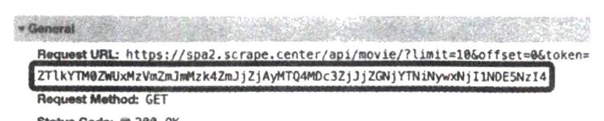
由于请求 Ajax 接口时必须加上token 参 数,因此如果不深入分析并找到 token 参数 的构造逻辑,是难以直接模拟 Ajax请求的。方法通常有两种:一种是深挖其中的逻辑,把token 参数的构造逻辑完全找出来,再用Python 代码复现,构造 Ajax请求;另一种是直接模拟浏览器的运行,绕过这个过程,因为在浏览器里是可以 看到这个数据的,所以如果能把看到的数据直接爬取下来,当然就能获取对应的信息了。第一种方法难度较高,我们先介绍第二种方法:模拟浏览器的运行,爬取数据。由于使用的工具是 Selenium,因此先了解一下它的基本使用方法。Selenium 是一个自动化测试工具,利用它可以驱动浏览器完成特定的操作,例如点击、下拉等,
还可以获取浏览器当前呈现的页面的源代码,做到所见即所爬,对于一些JavaScript 动态渲染的页面来说,这种爬取方式非常有效。下面我们就来感受一下 Selenium 的强大之处吧。
1. 准备工作
本节以 Chrome 浏览器为例讲解 Selenium 的用法。在开始之前,请确保已经正确安装好了 Chrome浏览器,并配置好了 ChromeDriver。另外,还需要正确安装好 Python的Selenium库。安装方法可以参考https://setup.scrape.center/selenium,全部配置完成后,便可以开始本节的学习。
2. 基本用法
首先大体看一下Selenium的功能。示例代码如下:
from selenium import webdriver
from selenium.webdriver.common.by import By
from selenium.webdriver.common.keys import Keys
from selenium.webdriver.support import expected_conditions as EC
from selenium.webdriver.support.wait import WebDriverWait
browser = webdriver.Chrome()
try:
browser.get('https://www.baidu.com')
input = browser.find_element_by_id('kw')
input.send_keys('Python')
input.send_keys (Keys.ENTER)
wait = WebDriverWait (browser, 10)
wait.until(EC.presence_of_element_located((By.ID, 'content_left')))
print(browser.current_url)
print(browser.get_cookies())
print(browser.page_source)
finally:
browser.close()运行代码后,会自动弹出一个Chrome 浏览器。浏览器会跳转到百度页面,然后在搜索框中输入Python,就会跳转到搜索结果页,如图7-2所示。
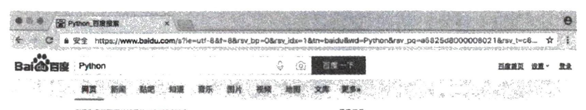
此时控制台的输出结果如下,因为页面源代码过长,所以此处省略其内容:
https://www.baidu.com/s?ie=utf-8&f=8&rsv_bp=0&rsv_idx=1&tn=baidu&wd=Python&rsv_pq=c94d0df9000a72d0&rsv_t=07099xvun1ZmC0bf6eQvygJ43IUTTU015FCJVPgwG2YREs70GplJjH2F%2BCQ&rqlang=cn&rsv_enter=1&rsv_sug3=6&rsv_sug2=0&inputT=87&rsv_sug4=87
[{'secure': False, 'value': 'B490B5EBF6F3CD402E515D22BCDA1598', 'domain': '.baidu.com', 'path': '/',
'httpOnly': False, 'name': 'BDORZ', 'expiry': 1491688071.707553}, {'secure': False, 'value':
'22473_1441_21084_17001', 'domain': '.baidu.com', 'path': '/', 'httpOnly': False, 'name': 'H_PS_PSSID'},
{'secure': False, 'value': '12883875381399993259_00_O_I_R_2_0303_CO2F_N_I_I_O', 'domain': '.www.baidu.com',
'path': '/', 'httpOnly': False, 'name': '_bsi', 'expiry': 1491601676.69722}]
<!DOCTYPE html><!--STATUS OK-->...</html>可以看到,我们得到的当前URL、Cookie 内容和页面源代码都是浏览器中的真实内容。所以说,用 Selenium 驱动浏览器加载网页,可以直接拿到JavaScript 渲染的结果,无须关心使用的是什么加密系统。下面详细了解一下 Selenium 的用法。
3. 初始化浏览器对象
Selenium 支持的浏览器非常多,既有Chrome、Firefox、Edge、Safari 等电脑端的浏览器,也有Android、BlackBerry 等手机端的浏览器。我们可以用如下方式初始化浏览器对象:
from selenium import webdriverbrowser = webdriver.Chrome()
browser = webdriver.Firefox()
browser = webdriver.Edge()
browser = webdriver.Safari()这样就完成了浏览器对象的初始化,并将其赋值给了 browser。接下来,我们要做的就是调用browser,执行其各个方法以模拟浏览器的操作。
4. 访问页面
我们可以使用get 方法请求网页,向其参数传入要请求网页的URL即可。例如,使用get方法访问淘宝,并打印出淘宝页面的源代码,代码如下:
from selenium import webdriverbrowser = webdriver.Chrome()
browser.get('https://www.taobao.com')
print(browser.page_source)
browser.close()运行这段代码后,弹出了 Chrome 浏览器并且自动访问了淘宝,然后控制台输出了淘宝页面的源代码,随后浏览器关闭。通过上面几行简单的代码,就可以驱动浏览器并获取网页源码,可谓非常便捷。
5. 查找节点
Selenium 可以驱动浏览器完成各种操作,比如填充表单、模拟点击等。例如,想要往某个输入框中输入文字,总得知道这个输入框在哪儿吧?对此,Selenium 为我们提供了一系列用来查找节点的方法,我们可以使用这些方法获取想要的节点,以便执行下一步的操作或者提取信息。
单个节点
例如,想从淘宝页面中提取搜索框这个节点,首先就要观察这个页面的源代码,如图 7-3 所示。
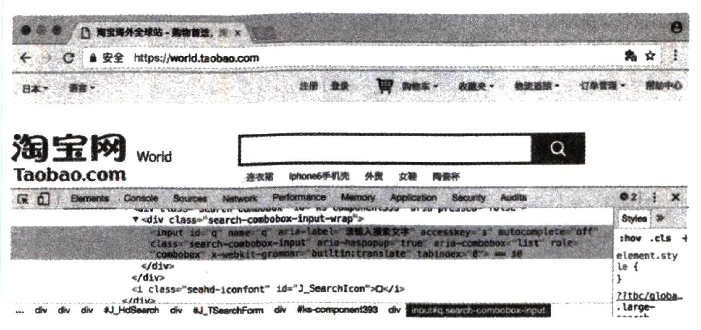
可以发现,淘宝页面的id属性值是q,name属性值也是q。此外,还有许多其他属性,我们可以用多种方式获取它们。例如,find_element_by_name 是根据 name属性获取,find_element_by_id 是根据 id 属性获取,此外还有根据XPath、CSS 选择器等的获取方式。
下面我们用代码实现一下:
from selenium import webdriver
browser = webdriver.Chrome()
browser.get('https://www.taobao.com')
input_first = browser.find_element_by_id('q')
input_second = browser.find_element_by_css_selector('#q')
input_third = browser.find_element_by_xpath('//*[@id="q"]')
print(input_first, input_second, input_third)
browser.close()这里我们使用3种方式获取输入框对应的节点,分别是根据id属性、CSS 选择器和XPath 获取。代码的运行结果如下:
<selenium.webdriver.remote.webelement.WebElement (session="5e53d9e1c8646e44c14c1c2880d424af",
element="0.5649563096161541-1")>
<selenium.webdriver.remote.webelement.WebElement (session="5e53d9e1c8646e44c14c1c2880d424af",
element="0.5649563096161541-1")>
<selenium.webdriver.remote.webelement.WebElement (session="5e53d9e1c8646e44c14c1c2880d424af",
element="0.5649563096161541-1")>可以看到,3种方式的返回结果完全一致。input_first, input_second 和 input_third 都属于WebElement 类型,是完全一致的。获取单个节点可以使用 find_element_by_id, find_element_by_name、find_element_by_xpath、find_element_by_link_text、find_element_by_partial_link_text、find_element_by_tag_name、find_element_by_class_name、find_element_by_css_selector,这些就是所有的方法。
除了上述方法,Selenium还提供了通用方法 find_element,使用这个方法需要传入两个参数:查找方式和方式的取值。这个方法其实就是上述那些方法的通用函数版本,不过它的参数更加灵活。例如 find_element_by_id(id)就等价于find_element(By.ID,id),两个方法得到的结果是完全一致的。我们用代码实现一下:
from selenium import webdriver
from selenium.webdriver.common.by import Bybrowser = webdriver.Chrome()
browser.get('https://www.taobao.com')
input_first = browser.find_element(By.ID, '9')
print(input_first)
browser.close()多个节点
如果查找的目标节点在网页中只有一个,那么用find_element 方法就完全可以实现。但如果目标节点有多个,再用 find_element 方法查找,就只能得到第一个节点了,此时需要用 find_elements 方法才能找到所有满足条件的节点。注意,这个方法名称中的element 后面多了一个s,注意区分。例如,要查找淘宝页面左侧导航条的所有条目,就可以这样实现:
from selenium import webdriverbrowser = webdriver.Chrome()
browser.get('https://www.taobao.com')
lis = browser.find_elements_by_css_selector('.service-bd li')
print(lis)
browser.close()运行结果如下:
[<selenium.webdriver.remote.webelement.WebElement (session="c26290835d4457ebf7d96bfab3740d19",
element="0.09221044033125603-1")>, <selenium.webdriver.remote.webelement.WebElement
(session="c26290835d4457ebf7d96bfab3740d19", element="0.09221044033125603-2")>,
<selenium.webdriver.remote.webelement.WebElement (session="c26290835d4457ebf7d96bfab3740d19",
element="0.09221044033125603-3")>...<selenium.webdriver.remote.webelement.WebElement
(session="c26290835d4457ebf7d96bfab3740d19", element="0.09221044033125603-16")>]这里简化了输出结果,省略了中间部分。可以看到,得到的内容变成了列表类型,列表中的每个节点都属于 WebElement类型。总结一下,如果使用 find_element 方法查找,只能得到匹配成功的第一个节点,这个节点是WebElement 类型的。如果使用find_elements方法,那么结果是列表类型的,列表中的每个节点都属于WebElement类型。获取多个节点可以使用 find_elements_by_id、find_elements_by_name、find_elements_by_xpath、find_elements_by_link_text、find_elements_by_partial_link_text、find_elements_by_tag_name、find_elements_by_class_name、find_elements_by_css_selector,这些就是所有的方法。同理,我们也可以直接使用 find_elements 方法,这时可以这样写:
lis = browser.find_elements(By.CSS_SELECTOR, '.service-bd li')得到的结果是完全一致的。
6. 节点交互
Selenium 可以驱动浏览器执行一些操作。比较常见的用法有:用send_keys方法输入文字,用clear方法清空文字,用click方法点击按钮。示例如下:
from selenium import webdriver
import timebrowser = webdriver.Chrome()
browser.get('https://www.taobao.com')
input = browser.find_element_by_id('q')
input.send_keys('iPhone')
time.sleep(1)input.clear()
input.send_keys('iPad')
button = browser.find_element_by_class_name('btn-search')
button.click()这里首先驱动浏览器打开淘宝,然后使用 find_element_by_id方法获取输入框,再使用 send_keys方法输入文字 iPhone,等待一秒后用 clear 方法清空输入框,并再次调用 send_keys 方法输入文字iPad,之后使用 find_element_by_class_name 方法获取搜索按钮,最后调用click 方法实现搜索。通过上面的方法,我们完成了几种常见的节点操作,更多操作可以参见官方文档的交互动作介绍:
7. 动作链
http://selenium-python.readthedocs.io/api.html#module-selenium.webdriver.remote.webelement。在上面的实例中,交互操作都是针对某个节点执行的。例如,对于输入框,调用了它的输入文字方法 send_keys 和清空文字方法 clear;对于搜索按钮,调用了它的点击方法click。其实还有一些操作,它们没有特定的执行对象,比如鼠标拖曳、键盘按键等,这些操作需要用另一种方式执行,那就是动作链。例如,可以这样实现拖曳节点的操作,将某个节点从一处拖曳至另一处:
from selenium import webdriver
from selenium.webdriver import ActionChains
browser = webdriver.Chrome()
url = 'http://www.runoob.com/try/try.php?filename=jqueryui-api-droppable'
browser.get(url)
browser.switch_to.frame('iframeResult')
source = browser.find_element_by_css_selector('#draggable')
target = browser.find_element_by_css_selector('#droppable')
actions = ActionChains(browser)
actions.drag_and_drop(source, target)
actions.perform()这里首先打开网页中的一个拖曳实例,然后依次选中要拖曳的节点和拖曳至的目标节点,接着声明一个 ActionChains 对象并赋值给 actions 变量,再后调用 actions 变量的 drag_and_drop 方法声明拖曳对象和拖曳目标,最后调用 perform 方法执行动作,就完成了拖曳操作,拖曳前和拖曳后的页面如图 7-4 和图7-5所示。
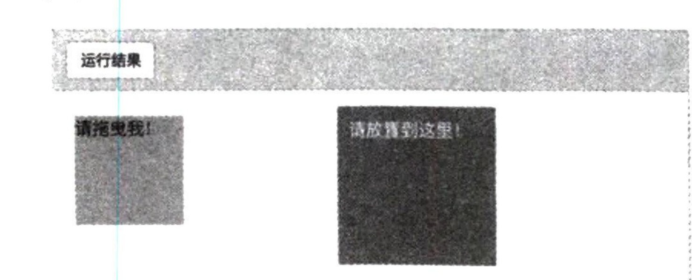
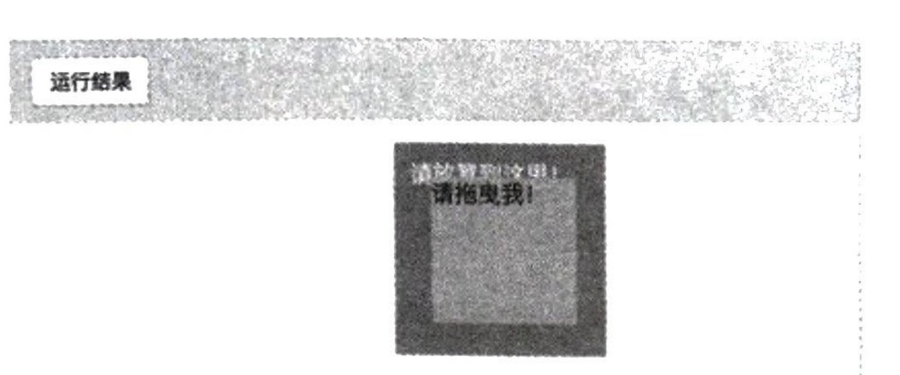
更多的动作链操作可以参考官方文档的介绍:http://selenium-python.readthedocs.io/api.html#module-selenium.webdriver.common.action_chains。
8. 运行 JavaScript
还有一些操作,Selenium 没有提供API。例如下拉进度条,面对这种情况可以模拟运行JavaScript,此时使用 execute_script 方法即可实现,代码如下:
from selenium import webdriver
browser = webdriver.Chrome()
browser.get('https://www.zhihu.com/explore')
browser.execute_script('window.scrollTo(0, document.body.scrollHeight)')
browser.execute_script('alert("To Bottom")')这里利用 execute_script 方法将进度条下拉到了最底部,然后就弹出了警告提示框。所以说有了execute_script 方法,那些没有被提供API的功能几乎都可以用运行JavaScript 的方式实现。
9. 获取节点信息
前面我们已经通过 page_source 属性获取了网页的源代码,下面就可以使用解析库(如正则表达式、Beautiful Soup、pyquery等)从中提取信息了。不过,既然 Selenium 已经提供了选择节点的方法,返回的结果是 WebElement 类型,那么它肯定也有相关的方法和属性用来直接提取节点信息,例如属性、文本值等。这样我们就不需要用通过解析源代码提取信息了,非常方便。让我们一起看看怎样获取节点信息吧。
获取属性
可以使用 get_attribute 方法获取节点的属性,但其前提是得先选中这个节点,示例如下:
from selenium import webdriver
browser = webdriver.Chrome()
url = 'https://spa2.scrape.center/'
browser.get(url)
logo = browser.find_element_by_class_name('logo-image')
print(logo)
print(logo.get_attribute('src'))运行代码,它会驱动浏览器打开示例页面,然后获取其中class名称为logo-image的节点,最后打印出这个节点的src属性。控制台的输出结果如下:
<selenium.webdriver.remote.webelement.WebElement (session="7f4745d35a104759239b53f68a6f27d0",
element="cd7c72b4-4920-47ed-91c5-ea06601dc509")>
https://spa2.scrape.center/img/logo.a508a8f0.png向 get_attribute 方法的参数传入想要获取的属性名,就可以得到该属性的值了。
获取文本值
每个 WebElement 节点都有 text 属性,直接调用这个属性就可以得到节点内部的文本信息,相当于pyquery 中的text方法,示例如下:
from selenium import webdriver
browser = webdriver.Chrome()
url = 'https://spa2.scrape.center/'
browser.get(url)
input = browser.find_element_by_class_name('logo-title')
print(input.text)这里依然先打开示例页面,然后获取class 名称为logo-title的节点,再将该节点内部的文本值打印出来。控制台的输出结果如下:Scrape
获取ID、位置、标签名和大小
除了属性和文本值,WebElement 节点还有一些其他属性,例如id属性用于获取节点ID, location属性用于获取节点在页面中的相对位置,tag_name 属性用于获取标签的名称,size属性用于获取节点的大小,也就是宽高,这些属性有时候还是很有用的。示例如下:
from selenium import webdriver
browser = webdriver.Chrome()
url = 'https://spa2.scrape.center/'
browser.get(url)
input = browser.find_element_by_class_name('logo-title')
print(input.id)
print(input.location)
print(input.tag_name)
print(input.size)这里首先获取 class 名称为logo-title的节点,然后分别调用该节点的id、location、tag_name、size 属性获取了对应的属性值。
10. 切换 Frame
我们知道,网页中有一种节点叫作 iframe,也就是子 Frame,相当于页面的子页面,它的结构和外部网页的结构完全一致。Selenium 打开一个页面后,默认是在父 Frame 里操作,此时这个页面中如果还有子 Frame,它是不能获取子 Frame 里的节点的,这时就需要使用 switch_to.frame 方法切换Frame。示例如下:
import time
from selenium import webdriver
from selenium.common.exceptions import NoSuchElementException
browser = webdriver.Chrome()
url = 'http://www.runoob.com/try/try.php?filename=jqueryui-api-droppable'
browser.get(url)
browser.switch_to.frame('iframeResult')
try:
logo browser.find_element_by_class_name('logo')
except NoSuchElementException:
print('NO LOGO')
browser.switch_to.parent_frame()
logo = browser.find_element_by_class_name('logo')
print(logo)
print(logo.text)这里还是以演示动作链操作时的网页为例,首先通过switch_to.frame方法切换到子 Frame里,然后尝试获取其中的logo节点(子Frame 里并没有 logo节点),如果找不到,就会抛出 NoSuchElementException异常,异常被捕捉后,会输出 NO LOGO。接着,切换回父 Frame,重新获取logo节点,发现此时可以成功获取了。控制台的输出结果如下:
NO LOGO
<selenium.webdriver.remote.webelement.WebElement (session="4bb8ac03ced4ecbdefef03ffdc0e4ccd",
element="0.13792611320464965-2")>
RUNOOB.COM所以,当页面中包含子Frame时,如果想获取子Frame中的节点,需要先调用switch_to.frame方法切换到对应的Frame,再进行操作。
11. 延时等待
在Selenium中,get方法在网页框架加载结束后才会结束执行,如果我们尝试在 get 方法执行完毕时获取网页源代码,其结果可能并不是浏览器完全加载完成的页面,因为某些页面有额外的Ajax请求,页面还会经由 JavaScript渲染。所以,在必要的时候,我们需要设置浏览器延时等待一定的时间,确保节点已经加载出来。这里等待方式有两种:一种是隐式等待,一种是显式等待。
隐式等待
使用隐式等待执行测试时,如果 Selenium 没有在DOM中找到节点,将继续等待,在超出设定时间后,抛出找不到节点的异常。换句话说,在查找节点而节点没有立即出现时,隐式等待会先等待一段时间再查找 DOM,默认的等待时间是0。示例如下:
from selenium import webdriver
browser = webdriver.Chrome()
browser.implicitly_wait(10)
browser.get('https://spa2.scrape.center/')
input = browser.find_element_by_class_name('logo-image')
print(input)这里我们用 implicitly_wait 方法实现了隐式等待。
显式等待
隐式等待的效果其实并不好,因为我们只规定了一个固定时间,而页面的加载时间会受网络条件影响。还有一种更合适的等待方式——————显式等待,这种方式会指定要查找的节点和最长等待时间。如果在规定时间内加载出了要查找的节点,就返回这个节点;如果到了规定时间依然没有加载出点,就抛出超时异常。示例如下:
from selenium import webdriver
from selenium.webdriver.common.by import By
from selenium.webdriver.support.ui import WebDriverWait
from selenium.webdriver.support import expected_conditions as EC
browser = webdriver.Chrome()
browser.get('https://www.taobao.com/')
wait = WebDriverWait (browser, 10)
input = wait.until(EC.presence_of_element_located((By.ID, 'q')))
button = wait.until(EC.element_to_be_clickable((By.CSS_SELECTOR, '.btn-search')))
print(input, button)这里首先引入 WebDriverWait 对象,指定最长等待时间为10,并赋值给wait 变量。然后调用wait的 until 方法,传入等待条件。这里先传入了 presence_of_element_located 这个条件,代表节点出现,其参数是节点的定位元组(By.ID,'q'),表示节点ID为q的节点(即搜索框)。这样做达到的效果是如果节点ID为q的节点在10秒内成功加载出来了,就返回该节点;如果超过10秒还没有加载出来,就抛出异常。然后传入的等待条件是 element_to_be_clickable,代表按钮可点击,所以查找按钮时要查找 CSS选择器为.btn-search的按钮,如果10秒内它是可点击的,也就是按钮节点成功加载出来了,就返回该节点;如果超过10秒还是不可点击,也就是按钮节点没有加载出来,就抛出异常。运行代码,在网速较佳的情况下是可以成功加载出节点的。
控制台的输出结果如下:
<selenium.webdriver.remote.webelement.WebElement (session="07dd2fbc2d5b1ce40e82b9754aba8fa8",
element="0.5642646294074107-1")>
<selenium.webdriver.remote.webelement.WebElement (session="07dd2fbc2d5b1ce40e82b9754aba8fa8",
element="0.5642646294074107-2")>可以看到,成功输出了两个节点,都是WebElement 类型的。如果网络有问题,10秒到了还是没有成功加载,就抛出 TimeoutException异常,此时控制台的输出结果如下:TimeoutException Traceback (most recent call last)
<ipython-input-4-f3d73973b223> in <module>()
7 browser.get('https://www.taobao.com/')
8 wait = WebDriverWait(browser, 10)
----> 9 input = wait.until(EC.presence_of_element_located((By.ID, 'q')))除了我们介绍的这两个,等待条件其实还有很多,例如判断标题内容、判断某个节点内是否出现了某文字等。表7-1列出了所有等待条件。
表7-1 等待条件
| 等待条件 | 含义 |
|---|---|
| title_is | 标题是某内容 |
| title_contains | 标题包含某内容 |
| presence_of_element_located | 节点出现,参数为节点的定位元组,如(By.ID, 'p') |
| visibility_of_element_located | 节点可见,参数为节点的定位元组 |
| visibility_of | 可见,参数为节点对象 |
| presence_of_all_elements_located | 所有节点都出现 |
| text_to_be_present_in_element | 某个节点的文本值中包含某文字 |
| text_to_be_present_in_element_value | 某个节点值中包含某文字 |
| frame_to_be_available_and_switch_to_it frame | 加载并切换 |
| invisibility_of_element_located | 节点不可见 |
| element_to_be_clickable | 按钮可点击 |
| staleness_of | 判断一个节点是否仍在DOM树中,可知页面是否已经刷新 |
| element_to_be_selected | 节点可选择,参数为节点对象 |
| element_located_to_be_selected | 节点可选择,参数为节点的定位元组 |
| element_selection_state_to_be | 参数为节点对象以及状态,相等返回True,否则返回 False |
| element_located_selection_state_to_be | 参数为定位元组以及状态,相等返回True,否则返回 False |
| alert_is_present | 是否出现警告提示框 |
更多等待条件的参数及用法介绍可以参考官方文档:http://selenium-python.readthedocs.io/api.html
12. 前进和后退
#module-selenium.webdriver.support.expected_conditions。平常使用浏览器时,都有前进和后退功能,Selenium 也可以完成这个操作,它使用 forward 方法实现前进,使用back 方法实现后退。示例如下:
import time
from selenium import webdriver
browser = webdriver.Chrome()
browser.get('https://www.baidu.com/')
browser.get('https://www.taobao.com/')
browser.get('https://www.python.org/')
browser.back()
time.sleep(1)
browser.forward()
browser.close()这里我们先连续访问了3个页面,然后调用back方法回到第2个页面,接着调用forward 方法又前进到第3个页面。
13. Cookie
使用 Selenium,还可以方便地对Cookie 进行操作,例如获取、添加、删除等。示例如下:
from selenium import webdriver
browser = webdriver.Chrome()
browser.get('https://www.zhihu.com/explore')
print(browser.get_cookies())
browser.add_cookie({'name': 'name', 'domain': 'www.zhihu.com', 'value': 'germey'})
print(browser.get_cookies())
browser.delete_all_cookies()
print(browser.get_cookies())这里我们先访问了知乎。知乎页面加载完成后,浏览器其实已经生成Cookie了。然后,调用浏览器对象的get_cookies 方法获取所有的Cookie。接着,添加一个 Cookie,这里传入了一个字典,包含 name、domain 和 value 等键值。之后,再次获取所有的Cookie,会发现结果中多了一项,就是我们新加的Cookie。最后,调用 delete_all_cookies 方法删除所有的Cookie 并再次获取,会发现此时结果就为空了。控制台的输出结果如下:
[{'secure': False, 'value': '"NGMOZTM5NDAwMWEyNDQwNDk50D1kZWY3OTkxY2IONDY= | 1491604091 |
23634290a6f407bfbb517888849ea509ac366d0"', 'domain': '.zhihu.com', 'path': '/', 'httpOnly': False, 'name':
'1_cap_id', 'expiry': 1494196091.403418}, ...]
[{'secure': False, 'value': 'germey', 'domain': '.www.zhihu.com', 'path': '/', 'httpOnly': False, 'name':
'name'}, {'secure': False, 'value': '"NGMOZTM5NDAwMWEYNDQwNDk50D1kZWY30TkxY2I0NDY=|1491604091 |
23634290a6f407bfbb517888849ea509ac366d0"', 'domain': '.zhihu.com', 'path': '/', 'httpOnly': False, 'name':
'1_cap_id', 'expiry': 1494196091.403418}, ...]
[]通过以上方法操作 Cookie 还是非常方便的。
14. 选项卡管理
访问网页的时候,会开启一个个选项卡。在Selenium中,我们也可以对选项卡做操作。示例如下:
import time
from selenium import webdriver
browser = webdriver.Chrome()
browser.get('https://www.baidu.com')
browser.execute_script('window.open()')
print(browser.window_handles)
browser.switch_to.window(browser.window_handles[1])
browser.get('https://www.taobao.com')
time.sleep(1)
browser.switch_to.window(browser.window_handles[0])
browser.get('https://python.org')这里首先访问百度,然后调用execute_script方法,向其参数传入 window.open()这个JavaScript语句,表示新开启一个选项卡。接着,我们想切换到这个新开的选项卡。window_handles 属性用于获取当前开启的所有选项卡,返回值是选项卡的代号列表。要想切换选项卡,只需要调用switch_to.window
方法即可,其中参数是目的选项卡的代号。这里我们将新开选项卡的代号传入,就切换到了第2个选项卡,然后在这个选项卡下打开一个新页面,再重新调用switch_to.window方法切换回第1个选项卡。控制台的输出结果如下:
15. 异常处理
['CDwindow-4f58e3a7-7167-4587-bedf-9cd8c867f435', 'CDwindow-6e05f076-6d77-453a-a36c-32baacc447df']在使用 Selenium的过程中,难免会遇到一些异常,例如超时、节点未找到等,一旦出现此类异常,程序便不会继续运行了。此时我们可以使用 try except 语句捕获各种异常。首先,演示一下节点未找到的异常,示例如下:
from selenium import webdriver
browser = webdriver.Chrome()
browser.get('https://www.baidu.com')
browser.find_element_by_id('hello')这里首先打开百度页面,然后尝试选择一个并不存在的节点,就会遇到节点未找到的异常。控制台的输出结果如下:NoSuchElementException Traceback (most recent call last)
<ipython-input-23-978945848a1b> in <module>()
3 browser = webdriver.Chrome()
4 browser.get('https://www.baidu.com')
----> 5 browser.find_element_by_id('hello')可以看到,这里抛出了 NoSuchElementException 异常,这通常表示节点未找到。为了防止程序遇到异常而中断运行,我们需要捕获这些异常,示例如下:
from selenium import webdriver
from selenium.common.exceptions import TimeoutException, NoSuchElementException
browser = webdriver.Chrome()
try:
browser.get('https://www.baidu.com')
except TimeoutException:
print('Time Out')
try:
browser.find_element_by_id('hello')
except NoSuchElementException:
print('No Element')finally:
browser.close()这里我们使用 try except 语句捕获各类异常。例如,对查找节点的方法 find_element_by_id捕获NoSuchElementException 异常,这样一旦出现这样的错误,就会进行异常处理,程序也不会中断。控制台的输出结果如下:No Element关于更多的异常类,可以参考官方文档:http://selenium-python.readthedocs.io/api.html#module-selenium.common.exceptions.
16. 反屏蔽
现在有很多网站增加了对 Selenium的检测,防止一些爬虫的恶意爬取,如果检测到有人使用Selenium 打开浏览器,就直接屏蔽。在大多数情况下,检测的基本原理是检测当前浏览器窗口下的window.navigator 对象中是否包含
webdriver 属性。因为在正常使用浏览器时,这个属性应该是undefined,一旦使用了Selenium,它就会给 window.navigator 对象设置 webdriver属性。很多网站通过 JavaScript 语句判断是否存在webdriver 属性,如果存在就直接屏蔽。一个典型的案例网站 https://antispiderl.scrape.center/就是使用上述原理,检测是否存在 webdriver属性,如果我们使用 Selenium 直接爬取该网站的数据,网站就会返回如图7-6所示的页面。
这时可能有人会说直接使用 JavaScript 语句把 webdriver 属性置空不就行了,例如调用execute_script 方法执行这行代码:
Object.defineProperty (navigator, "webdriver", {get: () => undefined})这行代码的确可以把 webdriver 属性置空,但execute_script 方法是在页面加载完毕之后才调用这行 JavaScript 语句的,太晚了,网站早在页面渲染之前就已经检测 webdriver 属性了,所以上述方法并不能达到预期的效果。在Selenium中,可以用CDP(即 Chrome Devtools Protocol, Chrome开发工具协议)解决这个问题,利用它可以实现在每个页面刚加载的时候就执行JavaScript语句,将webdriver 属性置空。这里执行的CDP方法叫作 Page.addScriptToEvaluateOnNewDocument,将上面的JavaScript语句传入其中即可。另外,还可以加入几个选项来隐藏 WebDriver 提示条和自动化扩展信息,代码实现如下:
from selenium import webdriver
from selenium.webdriver import ChromeOptionsoption = ChromeOptions()
option.add_experimental_option('excludeSwitches', ['enable-automation'])
option.add_experimental_option('useAutomation Extension', False)
browser = webdriver.Chrome (options=option)
browser.execute_cdp_cmd('Page.addScriptToEvaluateOnNewDocument', {
'source': 'Object.defineProperty (navigator, "webdriver", {get: () => undefined})'
})
browser.get('https://antispider1.scrape.center/')这样就能加载出整个页面了,如图7-7所示。
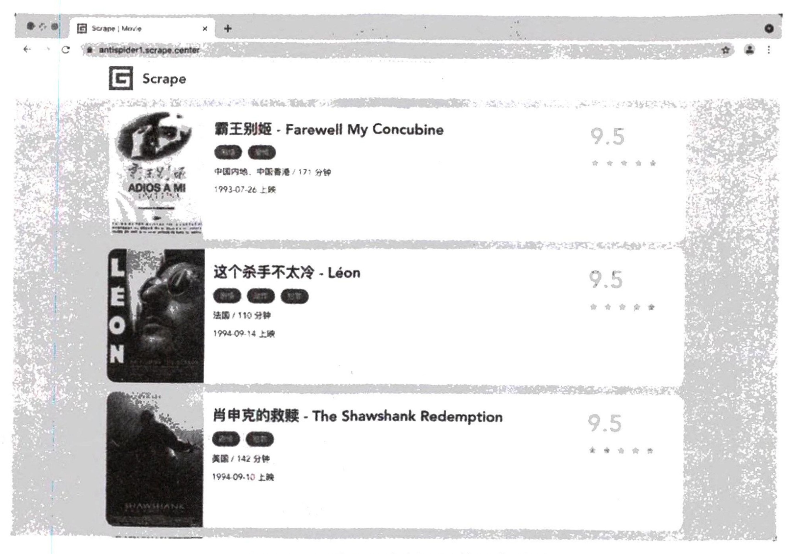
在大多数时候,以上方法可以实现 Selenium的反屏蔽。但也存在一些特殊网站会对 WebDriver 属性设置更多的特征检测,这种情况下可能需要具体排查。
17. 无头模式
不知道大家是否观察到,上面的案例在运行时,总会弹出一个浏览器窗口,虽然有助于观察页面的爬取状况,但窗口弹来弹去有时也会造成一些干扰。Chrome 浏览器从60版本起,已经开启了对无头模式的支持,即 Headless。无头模式下,在网站运行的时候不会弹出窗口,从而减少了干扰,同时还减少了一些资源(如图片)的加载,所以无头模式也在一定程度上节省了资源加载的时间和网络带宽。我们可以借助 ChromeOptions 对象开启 Chrome 浏览器的无头模式,代码实现如下:
from selenium import webdriver
from selenium.webdriver import ChromeOptions
option = ChromeOptions()
option.add_argument('--headless')
browser = webdriver.Chrome(options=option)
browser.set_window_size(1366, 768)
browser.get('https://www.baidu.com')
browser.get_screenshot_as_file('preview.png')这里利用 ChromeOptions 对象的 add_argument 方法添加了一个参数--headless,从而开启了无头模式。在无头模式下,最好设置一下窗口的大小,因此这里调用了 set_window_size方法。之后打开页面,并调用get_screenshot_as_file 方法输出了页面截图。运行这段代码后,会发现窗口不会再弹出来了,代码依然正常运行,最后输出的页面截图如图 7-8 所示。
这样我们就在无头模式下完成了页面的爬取和截图操作。
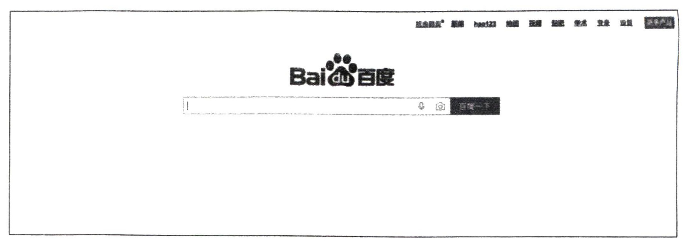
18. 总结
现在,我们大体了解了Selenium的常规用法。有了Selenium,处理 JavaScript 渲染的页面不再是难事,7.5节我们会用一个实例演示利用 Selenium 爬取网站的流程。本节代码参见:https://github.com/Python3WebSpider/SeleniumTest。
7.2 Splash 的使用
Splash 是一个JavaScript 渲染服务,是一个含有HTTP API 的轻量级浏览器,它还对接了Python中的Twisted 库和QT库。利用它,同样可以爬取动态渲染的页面。
1. 功能介绍
利用 Splash,可以实现如下功能:
异步处理多个网页的渲染过程;
获取渲染后页面的源代码或截图;
通过关闭图片渲染或者使用Adblock 规则的方式加快页面渲染的速度;
执行特定的JavaScript脚本;
通过Lua 脚本控制页面的渲染过程;
获取页面渲染的详细过程并以HAR(HTTP Archive)的格式呈现出来。接下来,我们一起了解Splash的具体用法。
2. 准备工作
请确保 Splash 已经正确安装好并可以在本地8050端口上正常运行。安装方法可以参考 https://setup.scrape.center/splash。
3. 实例引入
首先,利用 Splash 提供的 Web页面来测试其渲染过程。例如,在本机8050端口上运行 Splash 服务,然后打开http://localhost:8050/,即可看到Splash的Web页面,如图7-9所示。在图7-9中,右侧呈现的是一个渲染示例,可以看到其上方有一个输入框,默认显示文字是
http://google.com,我们将其换成 https://www.baidu.com 测试一下,换完内容后单击 Render me! 按钮,开始渲染,结果如图7-10所示。
Splash v3.5 Splash is a JavaScript rendering service. It's a lightweight browser with an HTTP API, implemented in Python using Twisted and Qt.
Render HTML
Run JavaScript
Execute custom JavaScript in page context
Take screenshots
Get HAR data
And more!
Splash is free & open source. Commercial support is also available by Scrapinghub.
main(splash, args):
assert(splash:go(args.url))
assert(splash:wait(0.5))
html = splash:html(),
png = splash:png(),
har = splash:har(),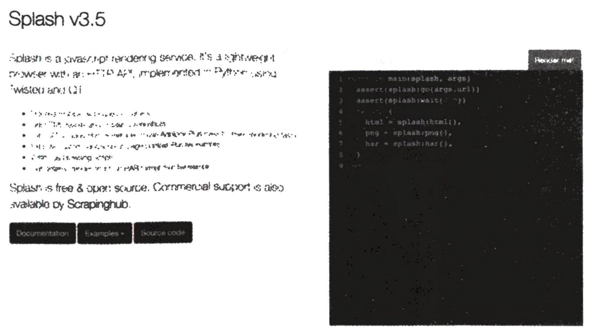
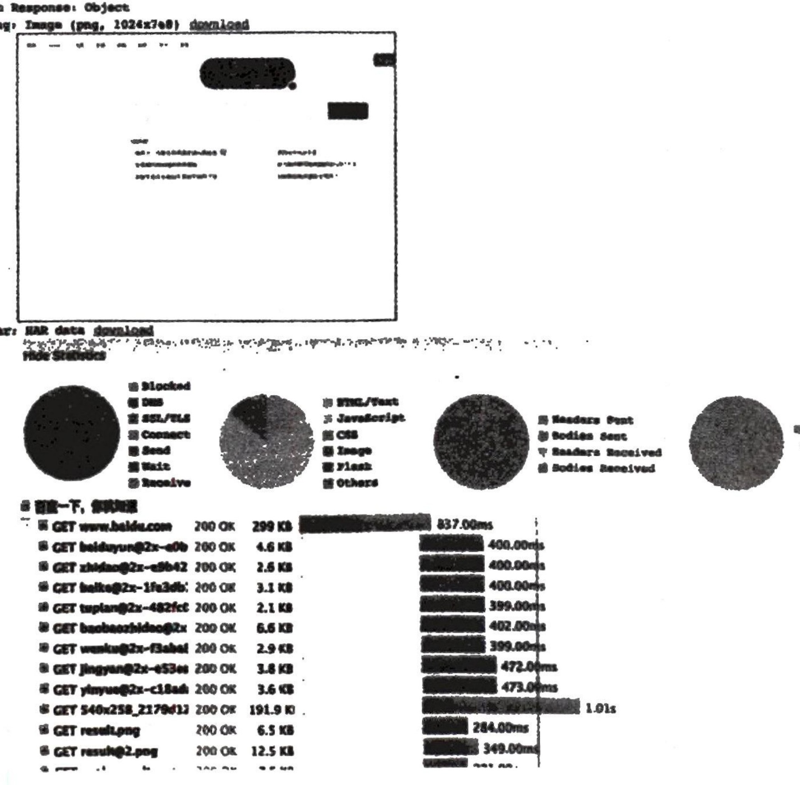
渲染结果中包含渲染截图、HAR 加载统计数据和网页的源代码。Splash渲染了整个网页,包括CSS、JavaScript 的加载等,最终呈现的页面和在浏览器中看到的完全一致。那么,这个过程由什么控制呢?我们返回首页,可以看到这样一段脚本:
function main(splash, args)
assert(splash:go(args.url))
assert(splash:wait(0.5))
return {html = splash:html(),
png = splash:png(),
har = splash:har(),}
end这个脚本是用Lua语言写的。即使不懂Lua语言的语法,也能大致看懂脚本的表面意思,首先调用go方法加载页面,然后调用wait方法等待了一定时间,最后返回了页面的源代码、截图和HAR信息。至此,我们大体了解了Splash 是通过Lua 脚本控制页面的加载过程,加载过程完全模拟浏览器,最后可返回各种格式的结果,如网页源码和截图等。接下来,我们就了解一下Lua脚本的写法以及相关API的用法。
4. Splash Lua 脚本
Splash 能够通过Lua 脚本执行一系列渲染操作,因此我们可以用它模拟 Chrome、PhantomJS。先了解一下 Splash Lua 脚本的入口和执行方式。
入口及返回值
来看一个基本实例:
function main(splash, args)
splash:go("http://www.baidu.com")
splash:wait(0.5)
local title = splash:evaljs("document.title")
return {title=title}
end将这段代码粘贴到图7-9中的代码编辑区域,然后单击 Render me!按钮,返回结果如图7-11所示。
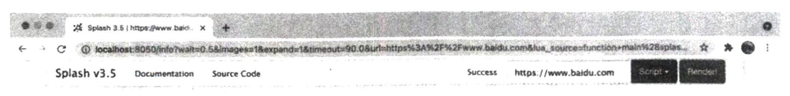
可以看到,渲染结果中包含网页的标题。这里我们通过 evaljs 方法传入了JavaScript 脚本,而document.title 返回的就是网页的标题,evaljs方法执行完毕后将标题赋值给 title 变量,随后将其返回。注意,我们在这里定义的方法叫main。这个名称是固定的,Splash 会默认调用这个方法。main方法的返回值既可以是字典形式,也可以是字符串形式,最后都会转化为Splash的HTTP 响应,例如:
function main(splash)
return {hello="world!"}
end返回的是字典形式的内容。下面的代码:
function main(splash)
return 'hello'
end返回的是字符串形式的内容。
异步处理
Splash 支持异步处理,但是并没有显式地指明回调方法,其回调的跳转是在内部完成的。示例如下:
function main(splash, args)
local example_urls = {"www.baidu.com", "www.taobao.com", "www.zhihu.com"}
local urls = args.urls or example_urls
local results = {}
for index, url in ipairs(urls) do
local ok, reason = splash:go("http://" .. url)
if ok then
splash:wait(2)
results[url] = splash:png()
end
end
return results
end运行这段代码后的返回结果是代码中3个网站的页面截图,如图7-12所示。
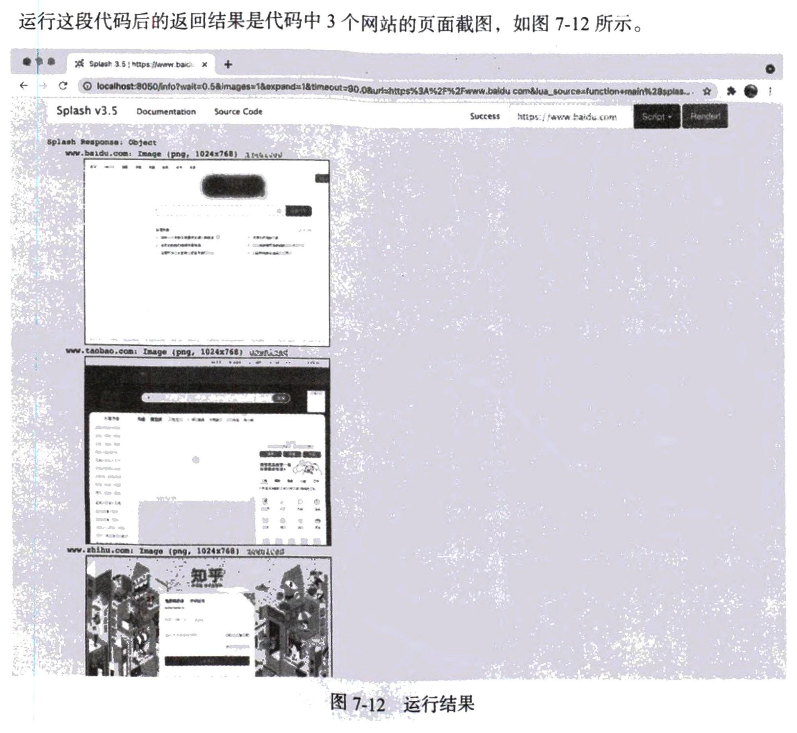
代码中调用的 wait 方法类似于Python中的sleep方法,参数是等待的秒数。当Splash 执行到此方法时,会转而处理其他任务,在等待参数指定的时间后再回来继续处理。这里值得注意的是,Lua 脚本中的字符串拼接和Python中不同,它使用的是“..”操作符,而不是“+”。如果有必要,可以简单了解一下Lua脚本的语法,详见http://www.runoob.com/lua/lua-basic-syntax.html。另外,这里设置了加载页面时的异常检测。go方法会返回加载页面的结果状态,如果返回的状态码是4xx 或5xx,那么ok 变量为空,就不会返回加载后的图片。
5. splash 对象的属性
能够注意到,前面例子中 main方法的第一个参数是 splash,这个对象非常重要,类似于 Selenium 中的WebDriver 对象,我们可以调用它的一些属性和方法来控制加载过程。接下来,先看 splash的属性。
args 属性
该属性用于获取页面加载时配置的参数,例如请求 URL。对于GET请求,args属性还可以用于获取GET请求的参数;对于POST请求,args 属性还可以用于获取表单提交的数据。此外,Splash 支持将 main 方法的第二个参数直接设置为args,例如:
function main(splash, args)local url = args.url end这里的第二个参数 args 就相当于 splash.args 属性,以上代码等价于:
function main(splash)local url = splash.args.url end
js_enabled 属性
这个属性是 Splash 执行 JavaScript代码的开关,将其设置为true 或 false 可以控制是否执行JavaScript 代码,默认取true。例如:
function main(splash, args)
splash:go("https://www.baidu.com")splash.js_enabled = false
local title = splash:evaljs("document.title")
return {title=title}end：这里我们将 js_enabled 设置为false,代表禁止执行JavaScript 代码,然后重新调用evaljs 方法执行了JavaScript代码,此时运行这段代码,就会抛出异常:
{
"error": 400,
"type": "ScriptError",
"info": {"type": "JS_ERROR",
},
"js_error_message": null,
"source": "[string \"function main(splash, args)\\r...\"]",
"message": "[string \"function main(splash, args)\\r...\"]:4: unknown JS error: None",
"line_number": 4,
"error": "unknown JS error: None",
"splash_method": "evaljs",
"description": "Error happened while executing Lua script"
}不过,我们一般不设置此属性,默认开启。
resource_timeout 属性
此属性用于设置页面加载的超时时间,单位是秒。如果设置为0或nil(类似Python中的None),
代表不检测超时。示例如下:
function main(splash)splash.resource_timeout = 0.1
assert(splash:go('https://www.taobao.com'))
return splash:png()end：这里将超时时间设置为了0.1秒。意味着如果在0.1秒内没有得到响应,就抛出异常:
{
"error": 400,
"type": "ScriptError",
"info": {
"error": "network5",
"type": "LUA_ERROR",
"line_number": 3,
"source": "[string \"function main(splash)\\r...\"]",
"message": "Lua error: [string \"function main(splash)\\r...\"]:3: network5"
},
"description": "Error happened while executing Lua script"
}此属性适合在页面加载速度较慢的情况下设置。如果超过某个时间后页面依然无响应,则直接抛出异常并忽略。
images_enabled 属性
此属性用于设置是否加载图片,默认是加载。禁用该属性可以节省网络流量并提高页面的加载速度,但是需要注意,这样可能会影响 JavaScript 渲染。因为禁用该属性之后,它的外层 DOM 节点的高度会受影响,进而影响DOM节点的位置。当JavaScript 对图片节点执行操作时,就会受到影响。另外有一点值得注意,Splash 会使用缓存。意味着即使禁用 images_enabled 属性,一开始加载出来的网页图片也会在重新加载页面后显示出来,这种情况下直接重启 Splash 即可。禁用 images_enabled 属性的示例如下:
function main(splash, args)splash.images_enabled = false
assert(splash:go('https://www.jd.com'))
return {png-splash:png()}end：这样返回的页面截图不会带有任何图片,加载速度也会快很多。
plugins_enabled 属性
此属性用于控制是否开启浏览器插件(如Flash插件),默认取 false,表示不开启。可以使用如下代码开启/关闭 plugins_enabled:splash.plugins_enabled = true/false
scroll_position 属性
此属性可以控制页面上下滚动或左右滚动,是一个比较常用的属性。示例如下:
function main(splash, args)
assert(splash:go('https://www.taobao.com'))
splash.scroll_position = {y=400}
return {png-splash:png()}end：这样可以控制页面向下滚动400像素值，运行结果如图7-13所示。
如果要让页面左右滚动，可以传入x参数，代码如下:
splash.scroll_position = {x=100, y=200}6. splash 对象的方法
除了前面介绍的属性,splash 对象还有如下方法。
go方法
该方法用于请求某个链接,可以模拟GET请求和POST请求,同时支持传入请求头、表单等数据,其用法如下:
ok, reason = splash:go{url, baseurl=nil, headers=nil, http_method="GET", body=nil, formdata=nil}对其中各参数的说明如下。
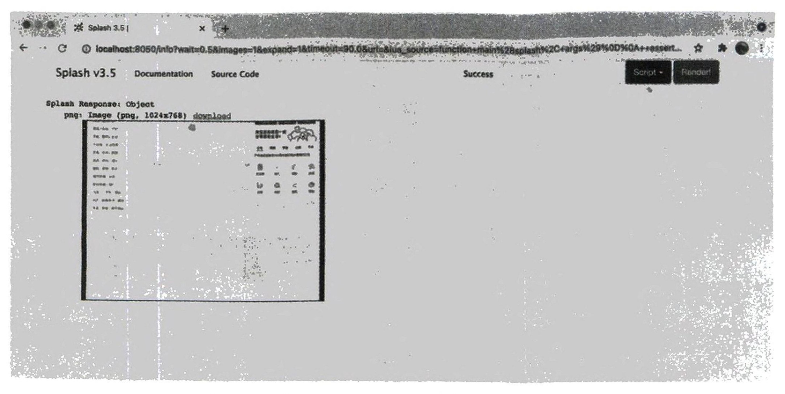
url:请求 URL。baseurl:资源加载的相对路径,是可选参数,默认为空。headers:请求头,是可选参数,默认为空。http_method:请求方法,是可选参数,默认为GET,同时支持POST。body: http_method为POST时的表单数据,使用的Content-type 为 application/json,是可选参数,默认为空。
formdata: http_method为POST 时的表单数据,使用的Content-type 为 application/x-www-form-urlencoded,是可选参数,默认为空。该方法的返回值是ok 变量和 reason变量的组合,如果ok为空,代表页面加载出现了错误,reason中包含错误的原因,否则代表页面加载成功。示例如下:
function main(splash, args)
local ok, reason = splash:go{"http://www.httpbin.org/post", http_method="POST", body="name=Germey"}
if ok then
return splash:html()end：end这里我们模拟了一个POST请求,并传入了表单数据,如果页面加载成功,就返回页面的源代码。
运行结果如下:
<html><head></head><body><pre style="word-wrap: break-word; white-space: pre-wrap;">{"args": {},
"data": "", "files": {}, "form": {"name":"Germey"}, "headers": {"Accept":"text/html,application/xhtml+xml,application/xml;q=0.9,*/*;q=0.8", "Accept-Encoding":"gzip, deflate", "Accept-Language":"en, *",
"Connection": "close", "Content-Length":"11", "Content-Type": "application/x-www-form-urlencoded", "Host":"www.httpbin.org", "Origin":"null", "User-Agent":"Mozilla/5.0 (X11; Linux x86_64) AppleWebKit/602.1
(KHTML, like Gecko) splash Version/9.0 Safari/602.1"},"json": null, "origin":"60.207.237.85","url":"http://www.httpbin.org/post"
}
</pre></body></html>可以看到,成功实现了 POST请求并发送了表单数据。
wait 方法
此方法用于控制页面等待时间,其用法如下:
ok, reason = splash:wait{time, cancel_on_redirect=false, cancel_on_error=true}对其中各参数的说明如下。
time:等待的时间,单位为秒。
cancel_on_redirect:如果发生了重定向就停止等待,并返回重定向结果,是可选参数,默认为false。
cancel_on_error:如果页面加载错误就停止等待,是可选参数,默认为false。其返回值同样是ok 变量和 reason 变量的组合。我们用一个实例感受一下:
function main(splash)
splash:go("https://www.taobao.com")
splash:wait(2)
return {html-splash:html()}end：执行如上代码,可以访问淘宝页面并等待2秒,随后返回页面源代码。
jsfunc 方法
此方法用于直接调用 JavaScript 定义的方法,但是需要用双中括号把调用的方法包起来,相当于实现了从 JavaScript 方法到 Lua 脚本的转换。示例如下:
function main(splash, args)
local get_div_count = splash:jsfunc(({function () {var body = document.body;
var divs = body.getElementsByTagName('div');
return divs.length;}
}))
splash:go("https://www.baidu.com")
return ("There are %s DIVs"): format(get_div_count())end：这段代码的运行结果如下:There are 21 DIVs这里我们先声明了一个JavaScript 定义的方法get_div_count,然后在页面加载成功后调用此方法计算出了页面中div 节点的个数。关于从 JavaScript 方法转换到Lua脚本的更多细节,可以参考官方文档: https://splash.readthedocs.io/en/stable/scripting-ref.html#splash-jsfunc。
evaljs 方法
此方法用于执行JavaScript 代码并返回最后一条 JavaScript语句的返回结果,其用法如下:
result = splash:evaljs(js)例如,可以用下面的代码获取页面标题:
runjs 方法
local title = splash:evaljs("document.title")此方法用于执行JavaScript代码,它的功能与evaljs方法类似,但更偏向于执行某些动作或声明某些方法。例如:
function main(splash, args)
splash:go("https://www.baidu.com")
splash:runjs("foo = function() {return 'bar'}")
local result = splash:evaljs("foo()")
return resultend：这里我们先用 runjs方法声明了一个JavaScript 方法 foo,然后通过 evaljs 方法调用 foo 方法得到的结果。运行结果如下:bar可以看到,这里我们成功模拟了发送 POST请求,并发送了表单数据。
html 方法
此方法用于获取页面的源代码,是一个非常简单且常用的方法,示例如下:
function main(splash, args)
splash:go("https://www.httpbin.org/get")
return splash:html()end：运行结果如下:
<html><head></head><body> <pre style="word-wrap: break-word; white-space: pre-wrap;">{"args": {},
"headers": {
"Accept": "text/html,application/xhtml+xml,application/xml;q=0.9,*/*;q=0.8",
"Accept-Encoding": "gzip, deflate",
"Accept-Language": "en,*",
"Connection": "close",
"Host": "www.httpbin.org",
"User-Agent": "Mozilla/5.0 (X11; Linux x86_64) AppleWebKit/602.1 (KHTML, like Gecko) splash Version/9.0 Safari/602.1"
png 方法
}
},
"origin": "60.207.237.85",
"url": "https://www.httpbin.org/get"
</pre></body></html>此方法用于获取PNG格式的页面截图,示例如下:
function main(splash, args)
splash:go("https://www.taobao.com")
return splash:png()end
jpeg 方法
此方法用于获取JPEG格式的页面截图,示例如下:
function main(splash, args)
splash:go("https://www.taobao.com")
return splash:jpeg()end
har 方法
此方法用于获取页面加载过程的描述信息,示例如下:
function main(splash, args)
splash:go("https://www.baidu.com")
return splash:har()end：运行结果如图 7-14所示。
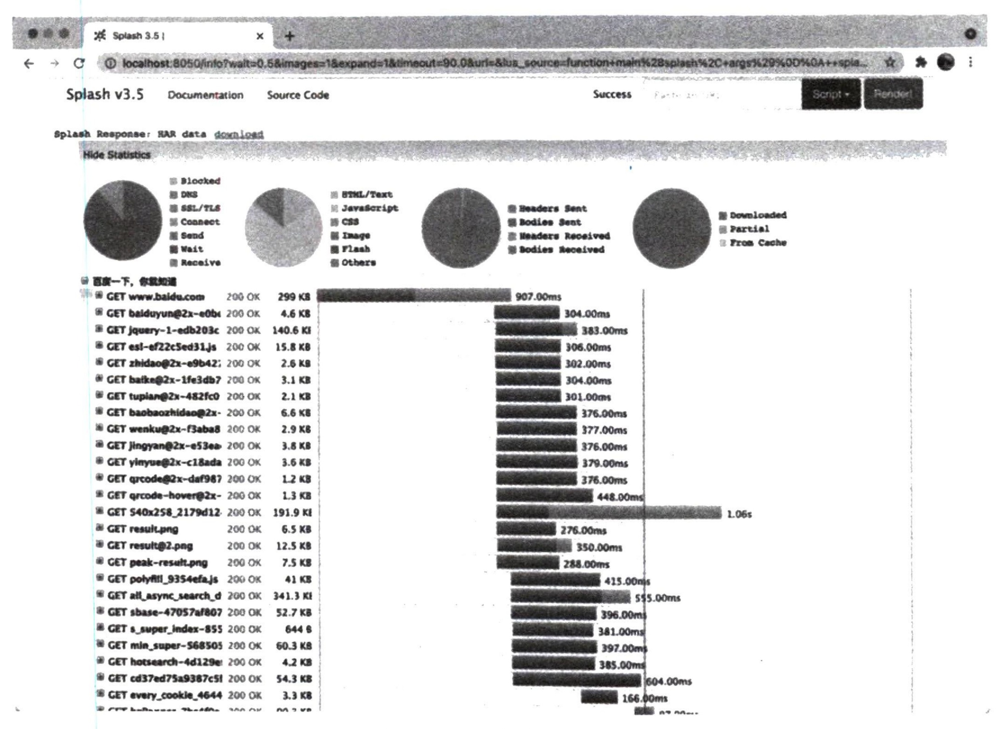
这张图里显示了百度页面加载过程中的每个请求记录的详情。
url 方法
此方法用于获取当前正在访问的URL,示例如下:
function main(splash, args)
splash:go("https://www.baidu.com")
return splash:url()end：运行结果如下:
https://www.baidu.com/set_user_agent 方法
此方法用于设置浏览器的 User-Agent,示例如下:
function main(splash)
splash: set_user_agent('Splash')
splash:go("http://www.httpbin.org/get")
return splash:html()
end这里我们将浏览器的User-Agent 属性设置为了Splash,运行结果如下:
<html><head></head><body> <pre style="word-wrap: break-word; white-space: pre-wrap;">{"args": {},
"headers": {
"Accept": "text/html,application/xhtml+xml,application/xml;q=0.9,*/*;q=0.8",
"Accept-Encoding": "gzip, deflate",
"Accept-Language": "en,*",
"Connection": "close",
"Host": "www.httpbin.org",
"User-Agent": "Splash"
},
"origin": "60.207.237.85",
"url": "http://www.httpbin.org/get"
}
</pre></body></html>可以看到,我们设置的User-Agent 属性值生效了。
select 方法
该方法用于选中符合条件的第一个节点,如果有多个节点符合条件,则只返回一个,其参数是CSS选择器。示例如下:
function main(splash)
splash:go("https://www.baidu.com/")
input = splash:select("#kw")
input:send_text('Splash')
splash:wait(3)
return splash:png()
end这里我们首先访问百度官网,然后用 select 方法选中搜索框,随后调用 send_text方法填写了文本,最后返回网页截图。运行结果如图7-15所示。
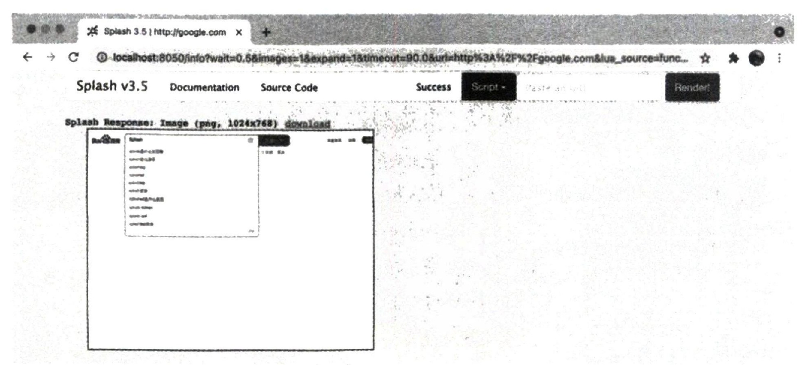
可以看到,我们成功填写了输入框。
select_all 方法
此方法用于选中所有符合条件的节点,其参数是CSS选择器。示例如下:
function main(splash)
local treat = require('treat')
assert(splash:go("http://quotes.toscrape.com/"))
assert(splash:wait(0.5))
local texts = splash:select_all('.quote .text')
local results = {}
for index, text in ipairs (texts) do
results [index] = text.node.innerHTML
end
end
return treat.as_array(results)这里我们通过 CSS 选择器选中了节点的正文内容,然后遍历所有节点,获取了其中的文本。运行结果如下:Splash Response: Array[10] 0: ""The world as we have created it is a process of our thinking. It cannot be changed without changing our thinking.""1: ""It is our choices, Harry, that show what we truly are, far more than our abilities.""2: "There are only two ways to live your life. One is as though nothing is a miracle. The other is as though everything is a miracle."3: ""The person, be it gentleman or lady, who has not pleasure in a good novel, must be intolerably stupid.""4: ""Imperfection is beauty, madness is genius and it's better to be absolutely ridiculous than absolutely boring.""5: ""Try not to become a man of success. Rather become a man of value.""6: ""It is better to be hated for what you are than to be loved for what you are not.""7: ""I have not failed. I've just found 10,000 ways that won't work.""8: ""A woman is like a tea bag; you never know how strong it is until it's in hot water.""9: ""A day without sunshine is like, you know, night.""可以发现,我们成功获取了10个节点的正文内容。
mouse_click 方法
此方法用于模拟鼠标的点击操作,参数为坐标值x、y。我们可以直接选中某个节点直接调用此方法,示例如下:
function main(splash)
splash:go("https://www.baidu.com/")
input = splash:select("#kw")
input:send_text('Splash')
splash:wait(3)
submit splash:select('#su')
submit:mouse_click()
splash:wait(5)
return splash:png()
end这里我们首先选中页面的输入框,向其中输入文本 Splash,然后选中提交按钮,调用 mouse_click方法提交查询,之后等待5秒,就会返回页面截图,如图7-16所示。
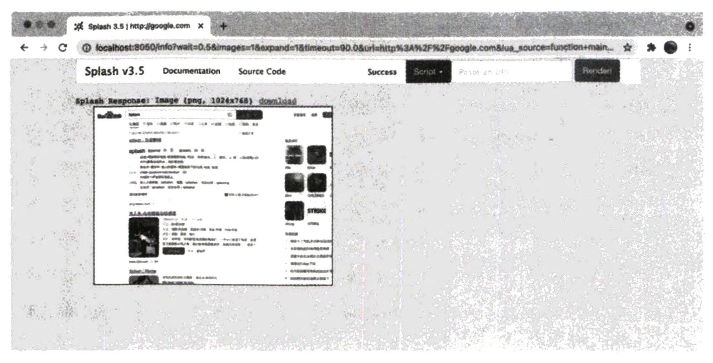
可以看到,我们成功获取了查询后的页面内容,模拟了百度的搜索操作。至此,splash 对象的常用方法介绍完毕,还有一些方法这里不一一介绍了,更加详细和权威的说明可以参见官方文档 https://splash.readthedocs.io/en/stable/scripting-ref.html,此页面介绍了 splash 对象的所有方法。另外,还有针对页面元素的方法,见官方文档 https://splash.readthedocs.io/en/stable/scripting-element-object.html。
7. 调用 Splash 提供的API
前面我们介绍了Splash Lua 脚本的用法,但这些脚本是在 Splash 页面里测试运行的,如何才能利用Splash 渲染页面? Splash 怎样才能和Python程序结合使用并爬取 JavaScript 渲染的页面?其实,Splash 给我们提供了一些HTTP API,我们只需要请求这些 API 并传递相应的参数即可获取页面渲染后的结果,下面我们学习这些API。
render.html
此API 用于获取 JavaScript 渲染的页面的HTML代码,API 地址是Splash 的运行地址加上此API 的名称,例如 http://localhost:8050/render.html,我们可以用curl 工具测试一下:curl http://localhost:8050/render.html?url=https://www.baidu.com我们给此API 传递了一个url参数,以指定渲染的URL,返回结果即为页面渲染后的源代码。用Python 实现的代码如下:
import requests
url = 'http://localhost:8050/render.html?url=https://www.baidu.com'
response = requests.get(url)
print(response.text)这样就可以成功输出百度页面渲染后的源代码了。此API还有其他参数,例如wait,用来指定等待秒数。如果要确保页面完全加载出来,就可以设置此参数,例如:
import requests
url = 'http://localhost:8050/render.html?url=https://www.taobao.com&wait=5'
response = requests.get(url)
print(response.text)战略意图: 正在对用户提供的图片内容进行OCR，并根据用户给出的特定规则过滤和格式化文本。增加等待时间后,得到响应的时间会相应变长,如这里我们等待大约5秒钟才能获取JavaScript 渲染后的淘宝页面源代码。另外,此API还支持代理设置、图片加载设置、请求头设置和请求方法设置,具体的用法可以参见官方文档 https://splash.readthedocs.io/en/stable/api.html#render-html。
render.png
此 API 用于获取页面截图,其参数比 render.html要多几个,例如 width 和 height 用来控制截图的宽和高,返回值是PNG格式图片的二进制数据。示例如下:
curl http://localhost:8050/render.png?url=https://www.taobao.com&wait=5&width=1000&height=700这里我们通过设置 width 和 height参数,将页面截图的大小缩放为1000×700像素。如果用 Python 实现,可以将返回的二进制数据保存为PNG格式的图片,代码如下:
import requests
url = 'http://localhost:8050/render.png?url=https://www.jd.com&wait=5&width=1000&height=700'
response = requests.get(url)
with open('taobao.png', 'wb') as f:
f.write(response.content)得到的图片如图7-17所示。
这样我们就成功获取了京东首页渲染完成后的页面截图,详细的参数设置可以参考官网文档 https://splash.readthedocs.io/en/stable/api.html#render-png。
render.jpeg
此API 和 render.png类似,不过它返回的是JPEG格式图片的二进制数据。另外,此API 比render.png 多一个参数 quality,该参数可以设置图片质量。
render.har
此API 用于获取页面加载的HAR数据,示例如下:
curl http://localhost:8050/render.har?url=https://www.jd.com&wait=5运行结果非常多,是一个JSON格式的数据,里面包含页面加载过程中的HAR数据,如图7-18所示。
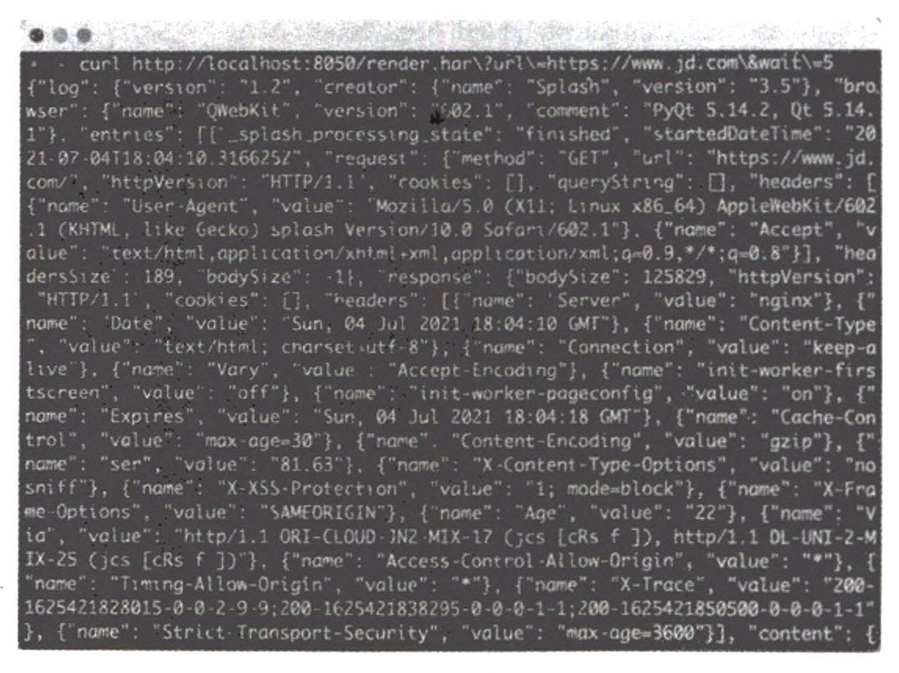
render.json
此API 包含前面介绍的所有render 相关的API 的功能,返回值是JSON 格式的数据,示例如下:curl http://localhost:8050/render.json?url=https://www.httpbin.org运行结果如下:
{"title": "httpbin (1): HTTP Client Testing Service", "url": "https://www.httpbin.org/", "requestedUrl":
"https://www.httpbin.org/", "geometry": [0, 0, 1024, 768]}可以看到,这里返回了JSON 格式的请求数据。我们可以通过传入不同的参数控制返回结果。例如,传入html=1,返回结果会增加页面源代码;传入png=1,返回结果会增加PNG格式的页面截图;传入har=1,返回结果会增加页面的HAR数据。例如:curl http://localhost:8050/render.json?url=https://www.httpbin.org&html=1&har=1这样返回的结果中便会包含页面源代码和 HAR 数据。此外,还有其他参数可以设置,可以参考官方文档 https://splash.readthedocs.io/en/stable/api.html#render-json。
execute
此API 才是最为强大的API。之前介绍了很多关于 Splash Lua 脚本的操作,用此API 即可实现与Lua 脚本的对接。要爬取一般的 JavaScript 渲染页面,使用前面的render.html 和 render.png等API 就足够了,但如果要实现一些交互操作,这些API还是心有余而力不足,就需要使用 execute了。先实现一个最简单的脚本,直接返回数据:
function main(splash)
return 'hello'
end然后将此脚本转化为 URL 编码后的字符串，拼接到 execute 后面，示例如下:
curl http://localhost:8050/execute?lua_source=function+main%28splash%29%0D%0A++return+%27hello%27%0D%0Aend运行结果如下:
hello这里我们通过 lua_source 参数传递了转码后的 Lua 脚本，通过 execute 获取了脚本最终的执行结果。
我们更加关心的是如何用 Python 实现上述过程，如果用 Python 实现，那么代码如下:
import requests
from urllib.parse import quote
lua = '''
function main(splash)
return 'hello'
end
'''
url = 'http://localhost:8050/execute?lua_source=' + quote(lua)
response = requests.get(url)
print(response.text)运行结果如下:
hello这里我们用 Python 中的三引号将 Lua 脚本括了起来，然后用 urllib.parse 模块里的 quote 方法对脚本进行 URL 转码，之后构造了请求 URL，并将其作为 lua_source 参数传递，这样运行结果就会显示 Lua 脚本执行后的结果。
我们再通过实例看一下:
import requests
from urllib.parse import quote
lua = '''
function main(splash, args)
local treat = require("treat")
local response = splash:http_get("http://www.httpbin.org/get")
return {
html = treat.as_string(response.body),
url = response.url,
status = response.status
}
end
'''
url = 'http://localhost:8050/execute?lua_source=' + quote(lua)
response = requests.get(url)
print(response.text)运行结果如下:
{"url": "http://www.httpbin.org/get", "status": 200, "html": "{\n\"args\": {}, \n\"headers\":\n{\n\"Accept-Encoding\": \"gzip,deflate\", \n\"Accept-Language\": \"en, *\", \n\"Connection\": \"close\",\n\"Host\": \"www.httpbin.org\",\n\"User-Agent\":\"Mozilla/5.0 (X11; Linux x86_64) AppleWebKit/602.1 (KHTML,\nlike Gecko) splash Version/9.0 Safari/602.1\"\n}, \n\"origin\": \"60.207.237.85\", \n\"url\":\n\"http://www.httpbin.org/get\"\n}\n"}可以看到，返回结果是 JSON 形式的，我们成功获取了请求 URL、状态码和页面源代码。
如此一来，之前所讲的 Lua 脚本就都可以用此方式与 Python 对接了，所有网页的动态渲染、模拟点击、表单提交、页面滑动、延时等待后的结果均可以自由控制获取细节，获取页面源代码和截图也都不在话下。
到现在为止,我们可以利用Python 和 Splash 爬取 JavaScript 渲染的页面了。除了Selenium, Splash同样可以实现非常强大的渲染功能,同时它不需要浏览器便可渲染,使用起来非常方便。
8. 负载均衡配置
用 Splash 爬取页面时,如果爬取的数据量非常大,任务非常多,那么只用一个 Splash 服务就会使压力非常大,此时可以考虑搭建一个负载均衡器把压力分散到多个服务器上,相当于多台机器、多个服务共同参与任务的处理,可以减小单个 Splash 服务的压力。由于篇幅原因,请移步 https://setup.scrape.center/splash-loadbalance 查看具体的配置方法。
9. 总结
本节中,我们全面地了解了 Splash 的基本用法。有了Splash,可以将 JavaScript 动态渲染的操作完全托管到一个服务器上,爬虫爬取的时候不需要再依赖 Selenium 等库,整个业务逻辑会更加轻量级。
7.3 Pyppeteer 的使用
在7.1节,我们学习了Selenium的基本用法,其功能的确非常强大,但很多时候会发现它也有一些不太方便的地方,例如配置环境时,需要先安装好相关浏览器,例如 Chrome、Firefox等,然后到官方网站下载对应的驱动。最重要的是,需要安装对应的Python Selenium库,而且得看版本是否对应,这确实不太方便。另外,如果要大规模部署 Selenium,一些环境配置问题也是很头疼的。本节,我们介绍 Selenium的另一个替代品:Pyppeteer。注意是 Pyppeteer,不是Puppeteer, Puppeteer 是基于Node.js的,Pyppeteer是基于Python的。
1. Pyppeteer 介绍
Puppeteer 是 Google 基于Node.js 开发的一个工具,有了它,我们可以利用JavaScript 控制 Chrome浏览器的一些操作。当然,Puppeteer 也可以应用于网络爬虫上,其API极其完善,功能非常强大。Pyppeteer 又是什么呢?它其实是 Puppeteer 的Python 版实现,但不是Google 开发的,是由一位来自日本的工程师依据 Puppeteer的一些功能开发出来的非官方版本。Pyppeteer 的背后实际上有一个类似于Chrome的浏览器——Chromium,它执行一些动作,从而进行网页渲染。首先,介绍一下Chromium 浏览器和Chrome 浏览器的渊源。Chromium 是 Google 为了研发Chrome启动的项目,是完全开源的。二者基于相同的源代码而构建,Chrome 的所有新功能都会先在Chromium 上实现,待验证稳定后才移植到Chrome上,因此Chromium 的版本更新频率更高,同时包含很多新功能。但作为一款独立的浏览器,Chromium的用户群体要小众得多。两款浏览器“同根同源”,有着同样的logo,只是配色不同,Chromium logo的颜色是不同深度的蓝色,Chrome logo的颜色是蓝色、红色、黄色和绿色这4种颜色，如图7-19所示。
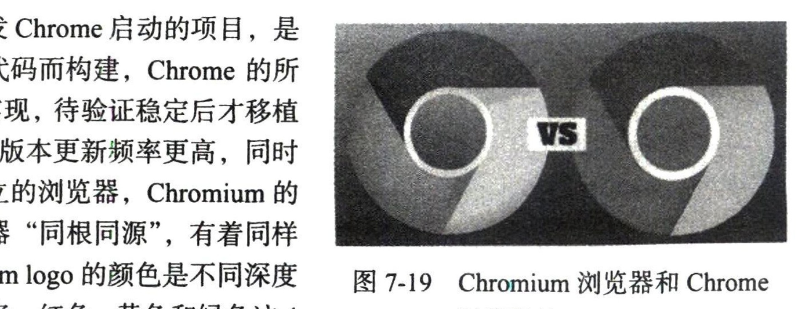
总的来说,两款浏览器的内核一样,实现方式也一样,可以看作开发版和正式版,功能上没有太大区别。
Pyppeteer 就是依赖 Chromium 浏览器运行的。如果第一次运行 Pyppeteer 的时候,没有安装Chromium 浏览器,程序就会帮我们自动安装和配置好,免去了烦琐的环境配置等工作。另外,Pyppeteer是基于Python 的新特性 async 实现的,所以它的一些操作执行也支持异步方式,和Selenium 相比效率也提高了。下面我们就一起了解一下 Pyppeteer 的相关用法。
2. 安装
首先要解决的便是安装问题。由于Pyppeteer 采用了Python的 async 机制,所以要求 Python 版本为3.5及以上。使用pip3 工具安装Pyppeteer即可:
pip3 install pyppeteer具体的安装过程可以参考https://setup.scrape.center/pyppeteer。安装完成之后,便可以开始接下来的学习。
3. 快速上手
我们测试一下基本的页面渲染操作,这里用网址 https://spa2.scrape.center/做测试,如图7-20所示。
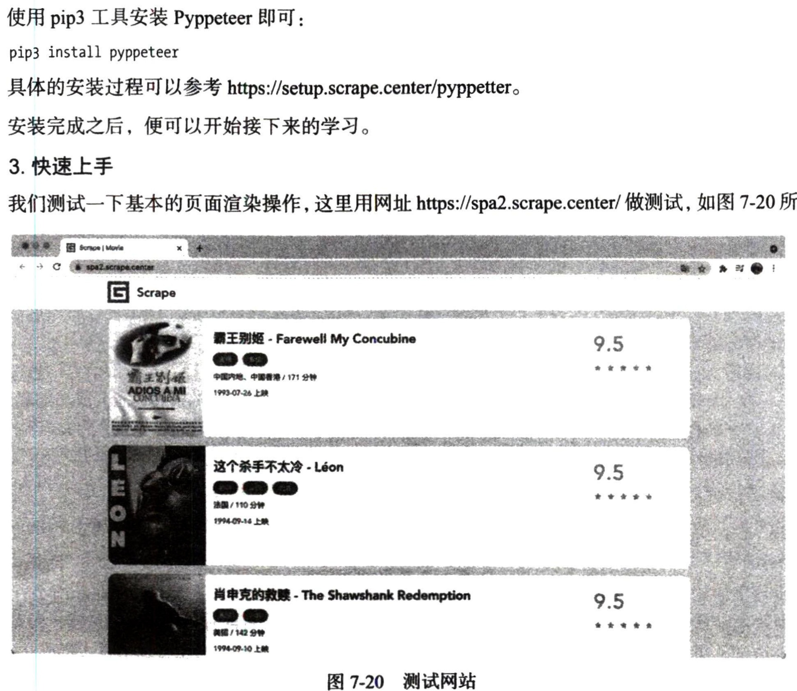
这个网站在7.1节已经分析过了,整个页面是用JavaScript 渲染出来的,一些Ajax 接口还带有加密参数,所以没法直接使用 requests 爬取看到的数据,同时也不太好直接模拟 Ajax 来获取数据。在7.1节介绍的使用 Selenium 爬取这个网站中数据的方式,原理就是模拟浏览器的操作,直接用浏览器把页面渲染出来,然后直接获取渲染后的结果。基于同样的原理,Pyppeteer 也可以做到。下面我们用 Pyppeteer 试试,代码可以写为如下这样:
import asyncio
from pyppeteer import launch
from pyquery import PyQuery as pq
async def main():
browser = await launch()
page = await browser.newPage()
await page.goto('https://spa2.scrape.center/')
await page.waitForSelector('.item.name')
doc = pq(await page.content())
names = [item.text() for item in doc('.item.name').items()]
print('Names:', names)
await browser.close()
asyncio.get_event_loop().run_until_complete(main())运行结果如下:Names:['霸王别姬- Farewell My Concubine','这个杀手不太冷- Léon','肖申克的救赎- The Shawshank Redemption','泰坦尼克号 - Titanic','罗马假日 - Roman Holiday','唐伯虎点秋香 - Flirting Scholar','乱世佳人- Gone with the Wind','喜剧之王 - The King of Comedy','楚门的世界- The Truman Show','狮子王 - The Lion King']先粗略看一下代码,大体意思是访问了测试网站,然后等待.item.name节点加载出来,随后通过pyquery 从页面源码中提取电影的名称并输出,最后关闭 Pyppeteer。运行结果和之前用 Selenium 实现的结果一样,我们成功模拟了页面的加载行为,然后提取了页面上所有所有电影的名称。那么,其中具体发生了什么?我们来逐行解析一下。
调用 launch 方法新建了一个 Browser对象,并赋值给 browser变量。这一步相当于启动了浏览器。
调用 browser 的 newPage方法,新建了一个Page对象,并赋值给page变量。相当于在浏览器中新建了一个选项卡,这时候虽然启动了一个新的选项卡,但是还未访问任何页面,浏览器依然是空白的。
调用 page 的 goto方法,相当于在浏览器中输入goto方法的参数中的URL,之后浏览器加载对应的页面。
调用 page 的 waitForSelector方法,传入选择器,页面就会等待选择器对应的节点信息加载出来,加载出来后,就立即返回,否则持续等待直到超时。如果顺利的话,页面会成功加载出来。
页面加载完后,调用content方法,可以获取当前浏览器页面的源代码,这就是JavaScript 渲染后的结果。
进一步,用pyquery 解析并提取页面上的电影名称,就得到最终结果了。另外,其他一些方法(例如调用 asyncio 的 get_event_loop 等方法)的相关操作属于 Python 异步编程 async 相关的内容,大家如果不熟悉,可以查看第6章的知识。通过上面的代码,我们同样可以爬取 JavaScript 渲染的页面。怎么样?相比 Selenium,这个代码是不是更简洁易读,环境配置也更加方便。在这个过程中,我们没有配置 Chrome 浏览器,没有配置浏览器驱动,免去了一些烦琐的步骤,却达到了和 Selenium一样的效果,还实现了异步爬取。接下来,我们看另外一个例子:
import asyncio
from pyppeteer import launchwidth, height = 1366, 768
async def main():
browser = await launch()page
= await browser.newPage()
await page.setViewport({'width': width, 'height': height)})
await page.goto('https://spa2.scrape.center/')
await page.waitForSelector('.item.name')
await asyncio.sleep(2)await page.screenshot (path='example.png') dimensions=
await page.evaluate('''() => {
return {}
}''')
width: document.documentElement.clientWidth,
height: document.documentElement.clientHeight,
deviceScaleFactor: window.devicePixelRatio,
print(dimensions)
await browser.close()
asyncio.get_event_loop().run_until_complete(main())这里我们用到了几个新的方法,设置了页面窗口的大小、保存了页面截图、执行JavaScript语句并返回了对应的数据。其中,在screenshot 方法里,通过path 参数用于传入页面截图的保存路径,另外还可以指定截图的保存格式 type、清晰度 quality、是否全屏 fullPage 和裁切 clip 等参数。页面截图的样例如图7-21所示。
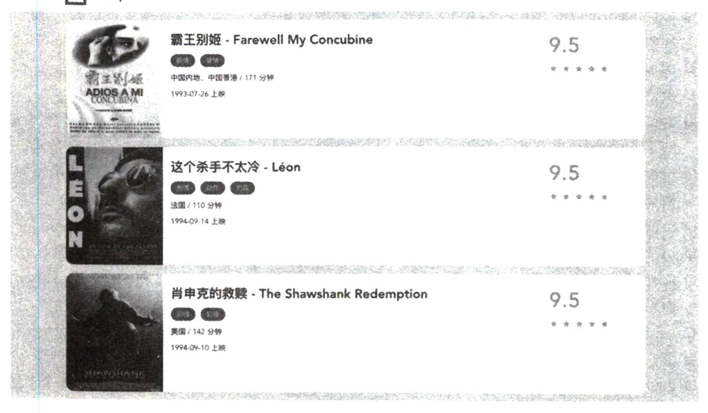
可以看到,返回结果是JavaScript 渲染后的页面,和我们在浏览器中看到的结果一模一样。我们还调用 evaluate 方法执行了一些JavaScript语句。这里给JavaScript传入了一个函数,使用return方法返回了页面的宽、高、像素大小比率这三个值,最后得到的是一个JSON 格式的对象,内容如下:
{'width': 1366, 'height': 768, 'deviceScaleFactor': 1}实例就先感受到这里,有太多功能还没提及。总之,利用Pyppeteer 可以控制浏览器执行几乎所有想实现的操作和功能,利用它自由地控制爬虫当然也不在话下。了解了基本的实例后,再来梳理 Pyppeteer 的一些基本和常用操作。Pyppeteer 几乎所有的功能都能在其官方文档的API Reference里找到,文档链接是https://pyppeteer.github.io/pyppeteer/reference.html,使用哪个方法就来这里查询即可,参数不必死记硬背,即用即查就好。
4. launch 方法
使用 Pyppeteer 的第一步便是启动浏览器。启动浏览器相当于点击桌面上的浏览器图标,用
Pyppeteer 实现时,调用 launch 方法即可。先来看下 launch 方法的 API,链接为:https://pyppeteer.github.io/pyppeteer/reference.html#launcher,该方法的定义如下:
pyppeteer.launcher.launch(options: dict = None, **kwargs) → pyppeteer.browser.Browser可以看到,launch 方法处于 launcher 模块中,在声明中没有特别指定参数,返回值是 browser 模块中的 Browser 对象。另外,观察源码可以发现,这是一个 async 修饰的方法,所以在调用的时候需要使用 await。接下来,看看 launch 方法的参数。
ignoreHTTPSErrors (bool):是否忽略 HTTPS 的错误,默认是 False。
headless (bool): 是否启用无头模式,即无界面模式。如果 devtools 参数是 True,该参数就会被设置为 False,否则为 True,即默认开启无界面模式。
executablePath (str): 可执行文件的路径。指定该参数之后就不需要使用默认的 Chromium 浏览器了,可以指定为已有的 Chrome 或 Chromium。
slowMo (int | float):通过传入指定的时间,可以减缓 Pyppeteer 的一些模拟操作。
args (List[str]):在执行过程中可以传入的额外参数。
ignoreDefaultArgs (bool): 是否忽略 Pyppeteer 的默认参数。如果使用这个参数,那么最好通过 args 设置一些参数,否则可能会出现一些意想不到的问题。这个参数相对比较危险,慎用。
handleSIGINT (bool): 是否响应 SIGINT 信号,也就是是否可以使用 Ctrl+C 终止浏览器程序,默认是 True。
handleSIGTERM (bool):是否响应 SIGTERM 信号 (一般是 kill 命令),默认是 True。
handleSIGHUP (bool):是否响应 SIGHUP 信号,即挂起信号,例如终端退出操作,默认是 True。
dumpio (bool): 是否将 Pyppeteer 的输出内容传给 process.stdout 对象和 process.stderr 对象,默认是 False。
userDataDir (str):用户数据文件夹,可以保留一些个性化配置和操作记录。
env (dict):环境变量,可以传入字典形式的数据。
devtools (bool): 是否自动为每一个页面开启调试工具,默认是 False。如果将这个参数设置为 True,那么 headless 参数就会无效,会被强制设置为 False。
logLevel (int | str):日志级别,默认和 root logger 对象的级别相同。
autoClose (bool):当一些命令执行完之后,是否自动关闭浏览器,默认是 True。
loop (asyncio.AbstractEventLoop): 事件循环对象。好了,了解了这些参数之后,小试牛刀一下吧。
5. 无头模式
首先,试用一下最常用的参数——headless。如果将它设置为 True 或者默认不设置,那么在启动的时候是看不到任何界面的。如果把它设置为 False,那么在启动的时候就可以看到界面了。我们一般会在调试的时候把它设置为 False,在生产环境中设置为 True。下面先尝试一下关闭无头模式:
import asyncio
from pyppeteer import launchasync def main():
await launch(headless=False)
await asyncio.sleep(100)asyncio.get_event_loop().run_until_complete(main())运行这段代码之后在控制台看不到任何输出,但是会出现一个空白的Chromium 界面,如
这就是一个光秃秃的浏览器而已,看一下相关信息,如
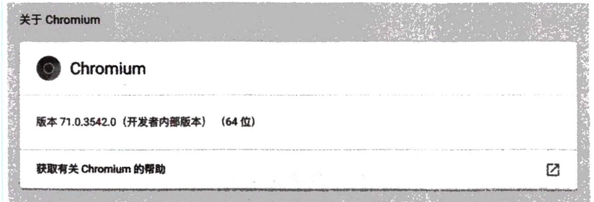
上面有 Chromium 浏览器的logo,开发者内部版本号,将其当作开发版的Chrome 浏览器就好。
6. 调试模式
本节开启调试模式。例如,在写爬虫的时候会经常需要分析网页结构和网络请求,所以开启调试工具还是很有必要的。可以将 devtools 参数设置为 True,这样每开启一个界面,就会弹出一个调试窗口,非常方便,示例如下:
import asyncio
from pyppeteer import launch
async def main():
browser = await launch (devtools=True)
page = await browser.newPage()
await page.goto('https://www.baidu.com')
await asyncio.sleep(100)
asyncio.get_event_loop().run_until_complete(main())刚才说过,如果 devtools 参数设置为True,无头模式就会关闭,界面始终会显现出来。这里我们新建了一个页面,打开了百度,界面运行效果如图7-24所示。
7. 禁用提示条
可以看到图7-24的上面有一条提示“Chrome 正受到自动测试软件的控制”,这个提示条有点烦人,怎么关闭呢?这时候就需要用到args参数了,禁用操作如下:
browser = await launch (headless=False, args=['--disable-infobars'])这里不再写完整代码了,就是给 launch 方法中的args 参数传入 list形式的数据,这里使用的是--disable-infobars。
8. 防止检测
有人会说,刚刚只是把提示关闭了,有些网站还是能检测到 Webdriver 属性。不妨拿之前的案例网站 https://antispider1.scrape.center/验证一下:
import asyncio
from pyppeteer import launchasync def main():
browser = await launch (headless=False, args=['--disable-infobars'])
page = await browser.newPage()
await page.goto('https://antispider1.scrape.center/')
await asyncio.sleep(100)asyncio.get_event_loop().run_until_complete(main())果然被检测到了,如图7-25所示。
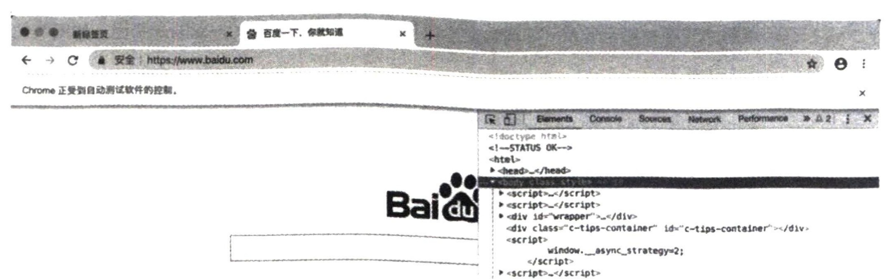
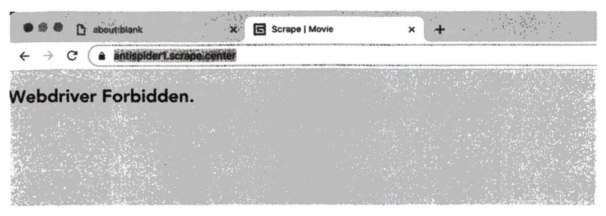
这说明 Pyppeteer 开启 Chromium 后,照样能被检测到 Webdriver 属性的存在。那么如何规避此问题呢? Pyppeteer 的 Page 对象有一个叫作 evaluateOnNewDocument 的方法,意思是在每次加载网页的时候执行某条语句,这里可以利用它执行隐藏 Webdriver 属性的命令,代码改写如下:
import asyncio
from pyppeteer import launch
async def main():
browser = await launch (headless=False, args=['--disable-infobars'])
page = await browser.newPage()
await page.evaluateOnNewDocument('Object.defineProperty (navigator, "webdriver", {get: () => undefined})')
await page.goto('https://antispider1.scrape.center/')
await asyncio.sleep(100)
asyncio.get_event_loop().run_until_complete(main())可以看到,整个页面成功加载出来了,绕过了对 Webdriver 属性的检测,如图7-26所示。
9. 页面大小设置
在图7-28中,还可以发现页面的显示bug,整个浏览器的窗口要比显示内容的窗口大,这个情况并非每个页面都会出现。这时可以设置窗口大小,调用 Page 对象的 setViewport方法即可,代码如下:
import asyncio
from pyppeteer import launch
width, height = 1366, 768
async def main():
browser = await launch(headless=False, args=['--disable-infobars', f'--window-size={width}, {height}'])
page = await browser.newPage()
await page.setViewport({'width': width, 'height': height})
await page.evaluateOnNewDocument('Object.defineProperty (navigator, "webdriver", {get: () => undefined})')
await page.goto('https://antispider1.scrape.center/')
await asyncio.sleep(100)
asyncio.get_event_loop().run_until_complete(main())这里我们同时设置了浏览器窗口的宽高以及显示区域的宽高,让二者一致,最后发现页面显示正常了,如图7-27所示。
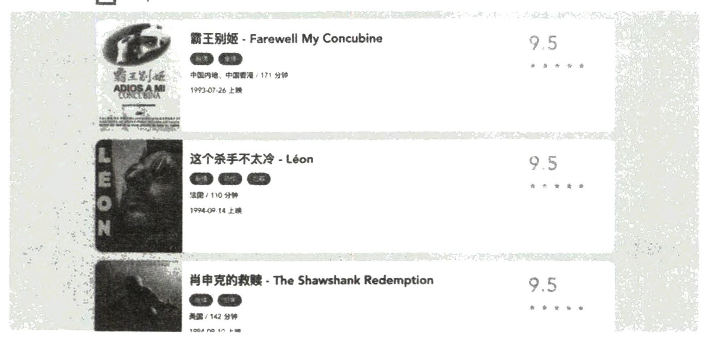
10. 用户数据持久化
刚才我们看到,每次打开Pyppeteer 的时候,都是一个新的空白的浏览器。如果网页需要登录,那么即使这次登录成功,下一次打开时也还是空白的,又得登录一次,这的确是一个问题。以淘宝为例,很多时候在关闭浏览器并再次打开时,它依然处于登录状态。这是因为淘宝的一些关键 Cookie 已经保存到本地了,再次登录的时候可以直接读取并保持登录状态。那么,这些信息保存在哪里呢?答案是用户目录下。其中不仅包含浏览器的基本配置信息,还包含一些Cache、Cookie 等信息,如果我们能在浏览器启动的时候读取这些信息,就可以恢复一些历史记录甚至登录状态信息了。
这也解决了一个问题:很多朋友每次在启动Selenium 或Pyppeteer 的时候总是一个全新的浏览器。究其原因就是没有设置用户目录,如果设置了,每次打开时就不会是一个全新的浏览器了,它可以恢复之前的历史记录,和很多网站的登录信息。那么,怎么设置用户目录呢?很简单,在启动浏览器的时候设置 userDataDir 属性就好了。示例如下:
import asyncio
from pyppeteer import launch
async def main():
browser = await launch (headless=False, userDataDir='./userdata', args=['--disable-infobars'])
page = await browser.newPage()
await page.goto('https://www.taobao.com')
await asyncio.sleep(100)
asyncio.get_event_loop().run_until_complete(main())这里将 userDataDir 属性的值设置为了./userdata,即当前目录的 userdata 文件夹。首先运行一下这段代码,然后登录一次淘宝,这时候可以观察到在当前运行的目录下又多了一个 userdata 文件夹,其结构如图7-28所示。
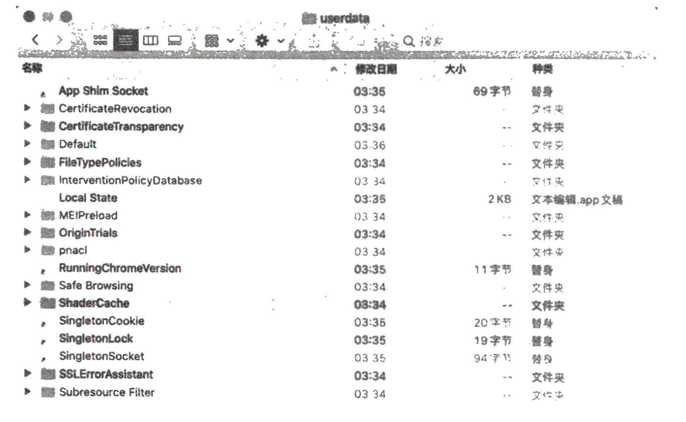
关于这个文件夹的具体介绍可以看官方的一些说明,例如https://chromium.googlesource.com/chromium/src/+/master/docs/user_data_dir.md。再次运行上面的代码,可以发现淘宝已经处于登录状态,不需要再次登录了,这样就成功跳过了登录的流程。当然,也可能由于时间太久,Cookie都过期了,还是需要登录。以上便是 launch方法及其对应参数的配置。
11. Browser
我们了解了 launch方法,它的返回值是一个Browser对象,即浏览器对象,我们通常会将其赋值给 browser 变量(其实就是Browser 类的一个实例)。
下面来看看 Browser 类的定义:
class pyppeteer.browser.Browser (connection: pyppeteer.connection.Connection, contextIds: List[str],ignoreHTTPSErrors: bool, setDefaultViewport: bool, process: Optional [subprocess. Popen] = None, closeCallback:Callable[[], Awaitable [None)] = None, **kwargs)
从这里可以看到,Browser 类的构造方法有很多参数,大多数情况下直接使用 launch 方法或connect 方法构建浏览器对象即可。browser 作为 Browser 类的实例,自然有很多用于操作浏览器的方法,下面我们选取一些比较有用的方法介绍一下。
12. 开启无痕模式
我们知道 Chrome 浏览器有无痕模式,其好处就是环境比较干净,不与其他浏览器示例共享 Cache、Cookie 等内容,可以通过createIncognitoBrowserContext 方法开启无痕模式,示例如下:
import asyncio
from pyppeteer import launchwidth, height = 1200, 768
async def main():
browser = await launch (headless=False,
args=['--disable-infobars', f'--window-size={width}, {height}'])
context = await browser.createIncognitoBrowserContext()
page = await context.newPage()
await page.setViewport({'width': width, 'height': height})
await page.goto('https://www.baidu.com')
await asyncio.sleep(100)asyncio.get_event_loop().run_until_complete(main())这里调用就是 browser 的 createIncognitoBrowserContext方法,返回值是一个 context 对象。利用 context 对象可以新建选项卡。运行这段代码后,我们发现浏览器进入了无痕模式,界面如图7-29所示。
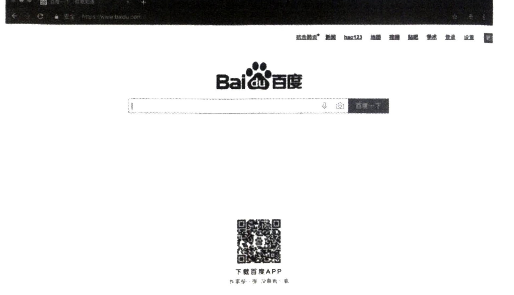
13. 关闭
怎样关闭浏览器就不多说了,使用的是close方法。很多时候会因为忘记关闭浏览器而产生额外开销,因此一定要记得在浏览器使用完毕之后调用close 方法,示例如下:
import asyncio
from pyppeteer import launch
from pyquery import PyQuery as pq
async def main():
browser = await launch()
page await browser.newPage()
await page.goto('https://spa2.scrape.center/')
await browser.close()
asyncio.get_event_loop().run_until_complete(main())14. Page
Page 即页面,对应一个网页、一个选项卡。在前面的很多示例中,其实已经出现了Page 对象的身影,这里再详细看一下它的一些常见用法。
选择器
Page 对象内置了很多用于选取节点的选择器方法,例如 J 方法,给它传入一个选择器,就能返回匹配到的第一个节点,等价于querySelector方法;又如 JJ 方法,给它传入选择器,会返回符合选择器的所有节点组成的列表,等价于querySelectorAll 方法。下面我们分别调用 J 方法、querySelector 方法、JJ 方法和 querySelectorAll 方法,代码如下:
import asyncio
from pyppeteer import launch
from pyquery import PyQuery as pq
async def main():
browser = await launch()
page = await browser.newPage()
await page.goto('https://spa2.scrape.center/')
await page.waitForSelector('.item.name')
j_result1 = await page.J('.item.name')
j_result2 = await page.querySelector('.item .name')
jj_result1 = await page.JJ('.item.name')
jj_result = await page.querySelectorAll('.item.name')
print('J Result1:', j_result1)
print('J Result2:', j_result2)
print('J) Result1:', jj_result1)
print('JJ Result2:', jj_result2)
await browser.close()
asyncio.get_event_loop().run_until_complete(main())运行结果如下:
J Result1: <pyppeteer.element_handle.ElementHandle object at 0x1166f7dd0>
J Result2: <pyppeteer.element_handle.ElementHandle object at 0x1166f07d0>
JJ Result1: [<pyppeteer.element_handle.ElementHandle object at 0x11677df50>, <pyppeteer.element_handle.
ElementHandle object at 0x1167857d0>, <pyppeteer.element_handle.ElementHandle object at 0x116785110>,
<pyppeteer.element_handle.ElementHandle object at 0x11679db10>, <pyppeteer.element_handle. ElementHandle
object at 0x11679dbdo>]
JJ Result2: [<pyppeteer.element_handle.ElementHandle object at 0x116794f10>, <pyppeteer.element_handle.
ElementHandle object at 0x116794d10>, <pyppeteer.element_handle.ElementHandle object at 0x116794f50>,
<pyppeteer.element_handle.ElementHandle object at 0x11679f690>, <pyppeteer.element_handle.ElementHandle
object at 0x11679f750>]可以看到,J 方法和 querySelector 方法的返回结果都是和传入的选择器相匹配的单个节点,返回值为 ElementHandle 对象。JJ 方法和 querySelectorAll 方法则都是返回了和选择器相匹配的节点组成的列表,列表中的内容是ElementHandle 对象。
选项卡操作
前面我们已经多次演示了新建选项卡的操作,使用的是newPage方法。那么新建选项卡之后,怎样获取和切换呢?先调用pages 方法获取所有打开的页面,然后选择一个页面调用其 bringToFront方法即可。下面来看一个例子:
import asyncio
from pyppeteer import launch
async def main():
browser = await launch (headless=False)
page = await browser.newPage()
await page.goto('https://www.baidu.com')
page = await browser.newPage()
await page.goto('https://www.bing.com')
pages = await browser.pages()
print('Pages:', pages)
page1 = pages [1]
await page1.bringToFront()
await asyncio.sleep(100)
asyncio.get_event_loop().run_until_complete(main())这里先启动了 Pyppeteer,然后调用 newPage 方法新建了两个选项卡,并访问了两个网站。
页面操作
一定要有对应的方法来控制一个页面的加载、前进、后退、关闭和保存等行为,示例如下:
import asyncio
from pyppeteer import launch
from pyquery import PyQuery as pq
async def main():
browser = await launch (headless=False)
page = await browser.newPage()
await page.goto('https://dynamic1.scrape.cuiqingcai.com/')
await page.goto('https://spa2.scrape.center/')
#后退
await page.goBack()
#前进
await page.goForward()
#刷新
await page.reload()
#保存 PDF
await page.pdf()
#截图
await page.screenshot()
# 设置页面 HTML
await page.setContent('<h2>Hello World</h2>')
#设置 User-Agent
await page.setUserAgent('Python')
#设置 Headers
await page.setExtraHTTPHeaders(headers={})
#关闭
await page.close()
await browser.close()
asyncio.get_event_loop().run_until_complete(main())这里我们介绍了一些常用的控制页面的方法,除此以外,还设置了 User-Agent、Headers。
点击
Pyppeteer 同样可以模拟点击,调用其click 方法即可。以https://spa2.scrape.center/为例,等其所有节点都加载出来后,模拟邮件点击:
import asyncio
from pyppeteer import launch
from pyquery import PyQuery as pq
async def main():
browser = await launch (headless=False)
page = await browser.newPage()
await page.goto('https://spa2.scrape.center/')
await page.waitForSelector('.item.name')
await page.click('.item .name', options={
'button': 'right',
'clickCount': 1, #1或2
'delay': 3000, #毫秒
})
await browser.close()
asyncio.get_event_loop().run_until_complete(main())这里 click 方法中的第一个参数就是选择器,即在哪里操作。第二个参数是几项配置,具体有如下内容。
button:鼠标按钮,取值有left、middle、right。
clickCount:点击次数,取值有1和2,表示单击和双击。
delay:延迟点击。
输入文本
Pyppeteer 也可以输入文本,使用type方法即可,示例如下:
import asyncio
from pyppeteer import launch
from pyquery import PyQuery as pq
async def main():
browser = await launch (headless=False)
page = await browser.newPage()
await page.goto('https://www.taobao.com')
#后退
await page.type('#q', 'iPad')
#关闭
await asyncio.sleep(10)
await browser.close()
asyncio.get_event_loop().run_until_complete(main())这里我们打开淘宝,给type方法的第一个参数传入选择器,第二个参数传入要输入的文本内容,Pyppeteer 就可以帮我们完成输入了。
获取信息
Page 对象需要调用 content 方法获取源代码,Cookies 对象调用cookies 方法获取,示例如下:
import asyncio
from pyppeteer import launch
from pyquery import PyQuery as pq
async def main():
browser = await launch (headless=False)
page = await browser.newPage()
await page.goto('https://spa2.scrape.center/')
print('HTML:', await page.content())
print('Cookies:', await page.cookies())
await browser.close()执行
asyncio.get_event_loop().run_until_complete(main())Pyppeteer 可以支持执行JavaScript语句,使用evaluate 方法即可。看之前的例子:
import asyncio
from pyppeteer import launch
width, height = 1366, 768
async def main():
browser = await launch()
page = await browser.newPage()
await page.setViewport({'width': width, 'height': height})
await page.goto('https://spa2.scrape.center/')
await page.waitForSelector('.item.name')
await asyncio.sleep(2)
await page.screenshot(path='example.png')
dimensions = await page.evaluate('''() => {
return {
width: document.documentElement.clientWidth,
height: document.documentElement.clientHeight,
deviceScaleFactor: window.devicePixelRatio,
}
}''')
print(dimensions)
await browser.close()asyncio.get_event_loop().run_until_complete(main())这里我们调用 evaluate 方法执行了JavaScript语句,并获取了对应的结果。另外,Pyppeteer 还有exposeFunction、evaluateOnNewDocument、evaluateHandle 方法,可以了解一下。
延时等待
在本节最开头的地方,我们演示了 waitForSelector的用法,它可以让页面等待某些符合条件的节点加载出来再返回结果。这里我们给 waitForSelector 传入一个CSS选择器,如果找到符合条件的节点,就立马返回结果,否则等待直到超时。除了 waitForSelector外,还有很多其他的等待方法,具体如下。
waitForFunction:等待某个JavaScript 方法执行完毕或返回结果。
waitForNavigation:等待页面跳转,如果没加载出来,就报错。
waitForRequest:等待某个特定的请求发出。
waitForResponse:等待某个特定请求对应的响应。
waitFor:通用的等待方法。
waitForXPath:等待符合XPath的节点加载出来。通过各种等待方法,就可以控制页面的加载情况了。
15. 总结
Pyppeteer 还有其他很多功能,例如键盘事件、鼠标事件、对话框事件等,这里就不再赘述了。更多内容可以参考官方文档 https://miyakogi.github.io/pyppeteer/reference.html 的案例说明。本节我们凭借一些小案例介绍了Pyppeteer 的基本用法,7.6节将使用Pyppeteer完成一个爬取实例。
7.4 Playwright 的使用
本节代码参见:https://github.com/Python3WebSpider/PyppeteerTest。
Playwright 是微软在2020年年初开源的新一代自动化测试工具,其功能和 Selenium、Pyppeteer 等类似,都可以驱动浏览器进行各种自动化操作。Playwright 对市面上的主流浏览器都提供了支持,API 功能简洁又强大,虽然诞生比较晚,但是现在发展得非常火热。
1. Playwright 的特点
Playwright 支持当前所有的主流浏览器,包括 Chrome 和 Edge (基于 Chromium)、Firefox、Safari (基于 WebKit),提供完善的自动化控制的 API。
Playwright 支持移动端页面测试,使用设备模拟技术,可以让我们在移动 Web 浏览器中测试响应式的 Web 应用程序。
Playwright 支持所有浏览器的无头模式和非无头模式的测试。
Playwright 的安装和配置过程非常简单,安装过程中会自动安装对应的浏览器和驱动,不需要额外配置 WebDriver 等。
Playwright 提供和自动等待相关的 API,在页面加载时会自动等待对应的节点加载,大大减小了 API 编写的复杂度。
本节我们就来了解下 Playwright 的使用方法。
2. 安装
首先请确保 Python 的版本大于等于 3.7。要安装 Playwright,可以直接使用 pip3 工具,命令如下:
pip3 install playwright安装完成后需要进行一些初始化操作:
playwright install这时 Playwright 会安装 Chromium、Firefox 和 WebKit 浏览器并配置一些驱动,我们不必关心具体的配置过程,Playwright 会自动为我们配置好。具体的安装说明可以参考 https://setup.scrape.center/playwright。安装完成后,便可以使用 Playwright 启动 Chromium、Firefox 或 WebKit 浏览器来进行自动化操作了。
3. 基本使用
Playwright 支持两种编写模式,一种是和 Pyppeteer 一样的异步模式,一种是和 Selenium 一样的同步模式,可以根据实际需要选择不同的模式。先来看一个同步模式的例子:
from playwright.sync_api import sync_playwright
with sync_playwright() as p:
for browser_type in [p.chromium, p.firefox, p.webkit]:
browser = browser_type.launch(headless=False)
page = browser.new_page()
page.goto('https://www.baidu.com')
page.screenshot(path=f'screenshot-{browser_type.name}.png')
print(page.title())
browser.close()这里我们首先导入并直接调用了sync_playwright方法,该方法的返回值是一个PlaywrightContextManager对象,可以理解为一个浏览器上下文管理器,我们将其赋值为p变量。然后依次调用p的chromium、firefox 和 webkit 属性创建了 Chromium、Firefox 以及Webkit 浏览器实例。接着用一个 for 循环依次执行了这3个浏览器实例的launch方法,同时设置 headless 参数为False。注意 如果不把 headless 参数设置为 False,就会以默认的无头模式启动浏览器,我们将看不到任何窗口。在for 循环中,launch方法返回的是一个Browser对象,我们将其赋值为browser 变量。然后调用browser 的 new_page 方法新建了一个选项卡,返回值是一个 Page 对象,将其赋值为page,这整个过程其实和 Pyppeteer 非常类似。之后调用page的一系列API完成了各种自动化操作,调用 goto 方法加载某个页面,这里访问的是百度首页;调用screenshot 方法获取页面截图,往其参数中传入的文件名称是截图自动保存后的图片名称,这里的名称中我们加入了browser_type的name属性,代表浏览器的类型,于是3次循环中 screenshot 方法的结果分别是 chromium、firefox 和 webkit。另外,还调用了 title 方法,该方法会返回页面的标题,即HTML 源代码中 title节点中的文字,也就是选项卡上的文字,并将返回的页面标题打印到控制台。最后,调用browser 的close方法关闭整个浏览器,代码结束。运行一下这段代码,可以看到有3个浏览器依次启动,分别是Chromium、Firefox 和 Webkit 浏览器,启动后都是加载百度首页,页面加载完后,生成页面截图,然后把页面标题打印到控制台,就退出了。此时,当前目录下会生成3个截图文件,图片都是百度首页,文件名中都带有对应浏览器的名称,如图7-30所示。
控制台的运行结果如下:百度一下,你就知道百度一下,你就知道百度一下,你就知道可以发现,我们非常方便地启动了三种浏览器,完成了自动化操作,并通过几个API 就获取了页面的截图和数据,整个过程速度非常快,这就是 Playwright 最为基本的用法。当然,除了同步模式,Playwright 还提供了支持异步模式的API,如果我们的项目里面使用了asyncio 关键字,就应该使用异步模式,写法如下:
import asyncio
from playwright.async_api import async_playwright
async def main():
async with async_playwright() as p:
for browser_type in [p.chromium, p.firefox, p.webkit]:
browser = await browser_type.launch()
page = await browser.new_page()
await page.goto('https://www.baidu.com')
await page.screenshot(path=f'screenshot-{browser_type.name}.png')
print(await page.title())
await browser.close()
asyncio.run(main())可以看到,写法和同步模式基本一样,只不过这里导入的是 async_playwright 方法,不再是sync_playwright方法,以及写法上添加了async/await关键字,最后的运行效果和同步模式是一样的。另外可以注意到,这个例子中使用了 with as 语句,with 用于管理上下文对象,可以返回一个上下文管理器,即一个PlaywrightContextManager 对象,无论代码运行期间是否抛出异常,该对象都能帮助我们自动分配并且释放 Playwright 的资源。
4. 代码生成
Playwright 还有一个强大的功能,是可以录制我们在浏览器中的操作并自动生成代码,有了这个功能,我们甚至一行代码都不用写。这个功能可以通过 playwright 命令行调用 codegen 实现,先来看看 codegen 命令都有什么参数,输入如下命令:
playwright codegen --help结果类似如下:
Usage: npx playwright codegen [options] [url]
open page and generate code for user actions
Options:
-0, --output <file name> saves the generated script to a file
--target <language> language to use, one of javascript, python, python-async, csharp (default: "python")
-b, --browser <browserType> browser to use, one of cr, chromium, ff, firefox, wk, webkit (default: "chromium")
--channel <channel> Chromium distribution channel, "chrome", "chrome-beta", "msedge-dev", etc
--color-scheme <scheme> emulate preferred color scheme, "light" or "dark"
--device <deviceName> emulate device, for example "iPhone 11"
--geolocation <coordinates> specify geolocation coordinates, for example "37.819722,-122.478611"
-load-storage <filename> load context storage state from the file, previously saved with --save-storage
--lang <language> specify language / locale, for example "en-GB"
-proxy-server <proxy> specify proxy server, for example "http://myproxy: 3128" or "socks5://myproxy:8080"
--save-storage <filename> save context storage state at the end, for later use with --load-storage
--timezone <time zone> time zone to emulate, for example "Europe/Rome"
-timeout <timeout> timeout for Playwright actions in milliseconds (default: "10000")
--user-agent <ua string> specify user agent string
--viewport-size <size> specify browser viewport size in pixels, for example "1280, 720"
-h, --help display help for command
Examples:
$ codegen
$ codegen --target=python
$ codegen -b webkit https://example.com可以看到结果中有几个选项,-o代表输出的代码文件的名称;-target 代表使用的语言,默认是python,代表会生成同步模式的操作代码,如果传入 python-async 则会生成异步模式的代码;-b代表使用的浏览器,默认是chromium。还有很多其他设置,例如-device可以模拟使用手机浏览器(如iPhone 11), -lang 代表设置浏览器的语言,-timeout 可以设置页面加载的超时时间。了解了这些用法后,我们来尝试启动一个Firefox浏览器,然后将操作结果输出到 script.py 文件,命令如下:
playwright codegen -o script.py -b firefox运行代码后会弹出一个 Firefox 浏览器,同时右侧输出一个脚本窗口,实时显示当前操作对应的代码。我们可以在浏览器中随意操作,例如打开百度,点击搜索框并输入 nba,再点击搜索按钮,这时的浏览器窗口如图7-31 所示。
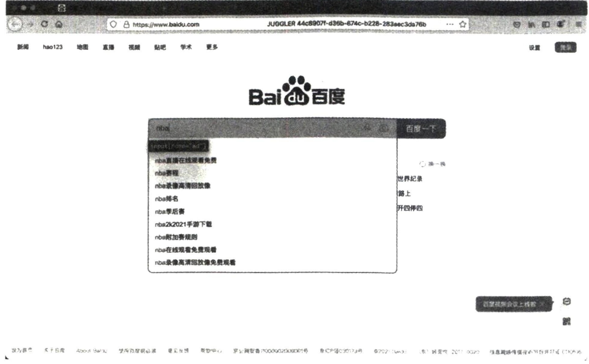
可以看到,浏览器中会高亮显示我们正在操作的页面节点,同时显示对应的选择器字符串 input[name="wd"],右侧的代码窗口如图 7-32 所示。
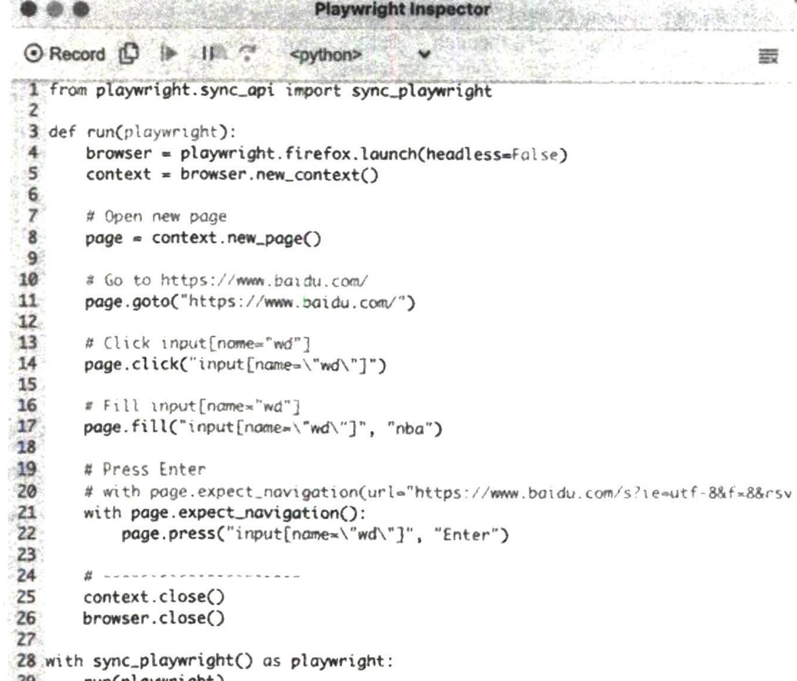
在操作浏览器的过程中,该窗口中的代码会跟着实时变化,现在这里已经生成了刚刚一系列操作对应的代码,例如:
page.fill("input[name=\"wd\"]", "nba")这行代码就对应在搜索框中输入nba的操作。所有操作完毕之后,关闭浏览器,Playwright 会生成一个 script.py文件,内容如下:
from playwright.sync_api import sync_playwright
def run(playwright):
browser = playwright.firefox.launch (headless=False)
context = browser.new_context()
#打开新页面
page = context.new_page()
#访问https://www.baidu.com/
page.goto("https://www.baidu.com/")
#点击搜索框
page.click("input[name=\"wd\"]")
#往搜索框中输入文字
page.fill("input[name=\"wd\"]", "nba")
# 点击搜索按钮
with page.expect_navigation():
page.click("text=百度一下")
context.close()
browser.close()
with sync_playwright() as playwright:
run(playwright)可以看到这里生成的代码和我们之前写的示例代码几乎差不多,而且也是可以运行的,运行之后会看到它在复现我们刚才所做的操作。所以,有了代码生成功能,只通过简单的可视化点击操作就能生成代码,可谓非常方便!另外这里有一个值得注意的点,仔细观察一下生成的代码,和前面例子不同的是,这里的new_page方法并不是直接通过 browser 调用的,而是通过 context,这个 context 又是由 browser 调用new_context 方法生成的。有朋友可能会问,这个context 究竟是做什么的呢?其实,context 变量是一个 BrowserContext对象,这是一个类似隐身模式的独立上下文环境,其运行资源是单独隔离的。在一些自动化测试过程中,我们可以为每个测试用例单独创建一个BrowserContext对象,这样能够保证各个测试用例互不干扰,具体的API可以参考https://playwright.dev/python/docs/api/
class-browsercontext。5. 支持移动端浏览器
Playwright 的另一个特色就是支持模拟移动端浏览器,例如模拟打开iPhone 12 Pro Max 上的 Safari浏览器。示例代码如下:
from playwright.sync_api import sync_playwright
with sync_playwright() as p:
iphone_12_pro_max = p.devices['iPhone 12 Pro Max']
browser = p.webkit.launch(headless=False)
context = browser.new_context(
**iphone_12_pro_max,
locale='zh-CN',
)
page = context.new_page()
page.goto('https://www.whatismybrowser.com/')
page.wait_for_load_state(state='networkidle')
page.screenshot(path='browser-iphone.png')
browser.close()这里我们先用 PlaywrightContextManager 对象的 devices 属性指定了一台移动设备,传入的参数是移动设备的型号,例如iPhone 12 Pro Max,当然也可以传入其他内容,例如iPhone 8、Pixel 2等。前面我们已经了解了 BrowserContext对象,它也可以用来模拟移动端浏览器,初始化一些移动设备信息、语言、权限、位置等内容。这里我们就创建了一个移动端 BrowserContext对象,最后把返回的BrowserContext 对象赋值给 context 变量。接着,我们调用 context 的 new_page方法创建了一个新的选项卡,然后跳转到一个用于获取浏览器信息的网站,调用 wait_for_load_state 方法等待页面的某个状态完成,这里我们传入的 state networkidle,也就是网络空闲状态。因为在页面初始化和数据加载过程中,肯定有网络请求伴随产生,所以加载过程肯定不算 networkidle 状态,意味着这里传入 networkidle 可以标识当前页面初始化和数据加载完成的状态。加载完成后,我们调用screenshot 方法获取了当前的页面截图,最后关闭了浏览器。运行一下代码,可以发现弹出了一个移动版浏览器,然后加载出了对应的页面,如图7-33所示。输出的截图也是浏览器中显示的结果,可以看到,这里显示的浏览器信息是iPhone上的Safari浏览器,也就是说我们成功模拟了一个移动端浏览器。
这样我们就成功模拟了移动端浏览器并做了一些设置,其操作API和PC版浏览器是完全一样的。
6. 选择器
不知道大家有没有注意,前面的click 和 fill 等方法都有一个字符串类型的参数,这些字符串有的符合 CSS 选择器的语法,有的以 text=开头,似乎不大有规律,那么它们到底支持怎样的匹配规则呢?下面就一起来了解一下。我们可以把传入的字符串称为 Element Selector,除了它已经支持的CSS 选择器、XPath,Playwright 还为它扩展了一些方便好用的规则,例如直接根据文本内容筛选、根据节点层级结构筛选等。
文本选择
文本选择支持直接使用text=这样的语法进行筛选,示例如下:
page.click("text=Log in")这代表选择并点击文本内容是 Log in 的节点。
CSS 选择器
CSS 选择器在3.3节就介绍过,例如根据id 或者 class 筛选:
page.click("button")
page.click("#nav-bar .contact-us-item")根据特定的节点属性筛选:
CSS 选择器+文本值
page.click("[data-test=login-button]")
page.click("[aria-label='Sign in']")可以使用 CSS 选择器结合文本值的方式进行筛选,比较常用的方法是has-text和text,前者代表节点中包含指定的字符串,后者代表节点中的文本值和指定的字符串完全匹配,示例如下:
page.click("article: has-text('Playwright')")
page.click("#nav-bar :text('Contact us')")第一行代码就是选择文本值中包含 Playwright 字符串的 article节点,第二行代码是选择 id 为nav-bar 的节点中文本值为 Contact us 的节点。
CSS 选择器+节点关系
CSS 选择器还可以结合节点关系来筛选节点,例如使用has 指定另外一个选择器,示例如下:
page.click(".item-description:has(.item-promo-banner)")这里选择的就是class为item-description的节点,且该节点还要包含 点,且该节点还要包含class为item-promo-banner的子节点。另外还可以结合一些相对位置关系,例如使用 right-of指定位于某个节点右侧的节点,示例如下:
page.click("input:right-of(:text('Username'))")这里选择的就是一个input节点,并且该节点要位于文本值为 Username 的节点的右侧。
XPath
当然,XPath 也是支持的,不过 xpath 这个关键字需要我们自行指定,示例如下:
page.click("xpath=//button")这里在开头指定“xpath=字符串”,代表这个字符串是一个XPath 表达式。更多关于选择器的用法和最佳实践,可以参考官方文档 https://playwright.dev/python/docs/selectors。
7. 常用操作方法
上面我们了解了浏览器的初始化设置和基本的操作实例,下面再介绍一些常用的操作方法。例如click(点击),fill(输入)等,这些方法都属于Page对象,所以所有的方法都可以从 Page 对象的API文档查找,文档地址是https://playwright.dev/python/docs/api/class-page。下面介绍几个常见操作方法的用法。
事件监听
Page 对象提供一个on方法,用来监听页面中发生的各个事件,例如close、console、load、request、response等。这里我们监听 response事件,在每次网络请求得到响应的时候会触发这个事件,我们可以设置回调方法来获取响应中的全部信息,示例如下:
from playwright.sync_api import sync_playwright
def on_response(response):
print(f'Status {response.status}: {response.url}')
with sync_playwright() as p:
browser = p.chromium.launch (headless=False)page = browser.new_page()
page.on('response', on_response)
page.goto('https://spa6.scrape.center/')
page.wait_for_load_state('networkidle')
browser.close()我们在创建 Page 对象后,就开始监听 response事件,同时将回调方法设置为 on_response,on_response 接收一个参数,然后输出响应中的状态码和链接。运行上述代码后,可以看到控制台输出如下结果:Status 200: https://spa6.scrape.center/Status 200: https://spa6.scrape.center/css/app.ea9d802a.css Status 200: https://spa6.scrape.center/js/app.5ef0d454.js Status 200: https://spa6.scrape.center/js/chunk-vendors.77daf991.js Status 200: https://spa6.scrape.center/css/chunk-19c920f8.2a6496e0.css Status 200: https://spa6.scrape.center/css/chunk-19c920f8.2a6496e0.css Status 200: https://spa6.scrape.center/js/chunk-19c920f8.c3a1129d.js Status 200: https://spa6.scrape.center/img/logo.a508a8f0.png Status 200: https://spa6.scrape.center/fonts/element-icons.535877f5.woff Status 301: https://spa6.scrape.center/api/movie?limit=10&offset=0&token=NGMwMzFhNGEzMTFiMzJkOGEOZTQ1YjUz MTc2OWNiYTI1YzkOZDM3MSwxNjIyOTE4NTES Status 200: https://spa6.scrape.center/api/movie/?limit=10&offset=0&token=NGMwMzFhNGEzMTFiMzJkOGEOZTQ1YjUz MTc2OWNiYTI1YzkOZDM3MSwxNjIyOTE4NTE5 Status 200: https://po.meituan.net/movie/da64660f82b98cdc1b8a3804e69609e041108.jpg@464w_644h_1e_1c Status 200: https://po.meituan.net/movie/283292171619cdfd5b240c8fd093f1eb255670.jpg@464w_644h_1e_1c Status 200: https://p1.meituan.net/movie/b607fba7513e7f15eab170aac1e1400d878112.jpg@464w_644h_1e_1c注意这里省略了部分重复的内容。可以发现,这个输出结果其实正好对应浏览器 Network 面板中的所有请求和响应,和图7-34里的内容是一一对应的。
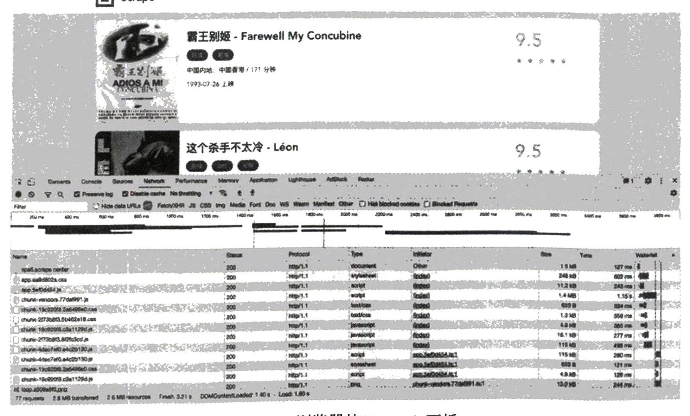
我们之前分析过这个网站,其真实的数据都是 Ajax 加载的,同时Ajax请求中还带有加密参数,不好轻易获取。但有了on_response方法,如果我们想截获Ajax请求,岂不是就非常容易了?改写一下这里的判定条件,输出对应的JSON结果,代码如下:
from playwright.sync_api import sync_playwright
def on_response (response):
if '/api/movie/' in response.url and response.status == 200:
print(response.json())
with sync_playwright() as p:
browser = p.chromium.launch(headless=False)
page = browser.new_page()
page.on('response', on_response)
page.goto('https://spa6.scrape.center/')
page.wait_for_load_state('networkidle')
browser.close()控制台的输出结果如下:
{'count': 100, 'results': [{'id': 1, 'name': '霸王别姬', 'alias': 'Farewell My Concubine', 'cover':'https://po.meituan.net/movie/ce4da3e03e655b5b88ed31b5cd7896cf62472.jpg@464w_644h_1e_1c', 'categories':
['剧情','爱情'], 'published_at': '1993-07-26', 'minute': 171, 'score': 9.5, 'regions': ['中国大陆','中国香港']},
'published_at': None, 'minute': 103, 'score': 9.0, 'regions': ['美国']},{'id': 10, 'name':'狮子王','alias':'The Lion King', 'cover':'https://po.meituan.net/movie/27b76fe6cf3903f3d74963f70786001e1438406.jpg@464w_644h_1e_1c', 'categories':
['动画','歌舞','冒险'],'published_at': '1995-07-15', 'minute': 89, 'score': 9.0, 'regions': ['美国']}]}简直是得来全不费工夫,我们通过on_response 方法拦截了 Ajax请求,直接拿到了响应结果,即使这个 Ajax请求中有加密参数,也不用担心,因为我们截获的是最后的响应结果,这让数据爬取变方便太多了。其他的事件监听,这里就不再一一介绍了,可以查阅官方文档。
获取页面源代码
获取页面源代码的过程其实很简单,直接调用 Page 对象的 content 方法就行,用法如下:
from playwright.sync_api import sync_playwright
with sync_playwright() as p:
browser = p.chromium.launch (headless=False)
page = browser.new_page()
page.goto('https://spa6.scrape.center/')
page.wait_for_load_state('networkidle')
html = page.content()
print(html)
browser.close()运行结果就是页面源代码。获取了页面源代码之后,借助一些解析工具就可以提取想要的信息了。
页面点击
实现页面点击的方法,我们已经不陌生了,就是click方法,这里详细介绍一下这个方法如何使用。click 方法的API定义如下:
page.click(selector, **kwargs)可以看到,必须传入的参数是 selector,其他参数都是可选的。selector 代表选择器,用来匹配想要点击的节点,如果有多个节点和传入的选择器相匹配,那么只使用第一个节点。其他一些比较重要的参数如下。
click_count:点击次数,默认为1。timeout:等待找到要点击的节点的超时时间(单位为秒),默认是30。position:需要传入一个字典,带有x属性和y属性,代表点击位置相对节点左上角的偏移量。
force:即使按钮设置了不可点击,也要强制点击,默认是False.click 方法的内部执行逻辑如下。
找到与 selector匹配的节点,如果没有找到,就一直等待直到超时,超时时间由 timeout 参数设置。
检查匹配到的节点是否存在可操作性,等待检查结果,如果某个按钮设置了不可点击,就等该按钮变成可点击的时候再去点击,除非通过force 参数设置了跳过可操作性检查的步骤,才会强制点击。
如果有需要,就滚动一下页面,使需要点击的节点呈现出来。
调用 Page 对象的 mouse 方法,点击节点的中心位置,如果指定了 position 参数,就点击参数指定的位置。具体的参数设置可以参考官方文档 https://playwright.dev/python/docs/api/class-page/#pageclickselector-kwargs.
文本输入
文本输入对应的方法是fill,其API定义如下:
page.fill(selector, value, **kwargs)这个方法有两个必传参数,第一个也是 selector,依然代表选择器;第二个是 value,代表输入的文本内容;还可以通过timeout 参数指定查找对应节点的最长等待时间。
获取节点属性
除了操作节点本身,我们还可以获取节点的属性,方法是get_attribute,其API 定义如下:
page.get_attribute(selector, name, **kwargs)这个方法有两个必传参数,第一个还是 selector;第二个是name,代表要获取的属性的名称;还可以通过 timeout 参数指定查找对应节点的最长等待时间。示例如下:
from playwright.sync_api import sync_playwrightwith sync_playwright() as p:
browser = p.chromium.launch (headless=False)
page = browser.new_page()
page.goto('https://spa6.scrape.center/')
page.wait_for_load_state('networkidle')
href = page.get_attribute('a.name', 'href')
print(href)
browser.close()这里我们调用了 get_attribute 方法,传入的selector 参数值是a.name,代表查找class 为 name的a节点,name 参数值传入了 href,代表获取超链接的内容,输出结果如下:/detail/ZWYzNCNOZXVxMGJ0dWEjKC01N3cxcTVvNS0takA50Hh5Z21tbHlmeHMqLSFpLTAtbWIx可以看到获取了对应节点的 href属性,但只有一条结果,这是因为如果传入的选择器匹配了多个节点,就只会用第一个。那么怎样获取所有匹配到的节点呢?
获取多个节点
使用 query_selector_all方法可以获取所有节点,它会返回节点列表,通过遍历得到其中的单个节点后,可以接着调用上面介绍的针对单个节点的方法完成一些操作和获取属性,示例如下:
from playwright.sync_api import sync_playwright
with sync_playwright() as p:
browser = p.chromium.launch (headless=False)
page = browser.new_page()
page.goto('https://spa6.scrape.center/')
page.wait_for_load_state('networkidle')
elements = page.query_selector_all('a.name')
for element in elements:
print(element.get_attribute('href'))
print(element.text_content())
browser.close()这里通过 query_selector_all方法获取了所有匹配到的节点,每个节点各对应一个ElementHandle 对象,可以调用 ElementHandle 对象的get_attribute 方法获取节点属性,也可以通过 text_content方法获取节点文本。运行结果如下:/detail/ZWYzNCNOZXVxMGJ0dWEjKC01N3cxcTVvNS0takA50Hh5Z21tbHlmeHMqLSFpLTAtbWIx霸王别姬 - Farewell My Concubine/detail/ZWYzNCNOZXVxMGJ0dWEjKC01N3cxcTVvNS0takA50Hh5Z2ltbHlmeHMqLSFpLTAtbWIy这个杀手不太冷- Léon/detail/ZWYzNCNOZXVxMGJ0dWEjKC01N3cxcTVvNS0takA50Hh5Z21tbHlmeHMqLSFpLTAtbWIz肖申克的救赎 - The Shawshank Redemption/detail/ZWYzNCNOZXVxMGJ0dWEjKC01N3cxcTVvNS0takA50Hh5Z21tbHlmeHMqLSFpLTAtbWIO泰坦尼克号 - Titanic/detail/ZWYzNCNOZXVxMGJ0dWEjKC01N3cxcTVvNS0takA50Hh5Z21tbHlmeHMqLSFpLTAtbWI1罗马假日 - Roman Holiday/detail/ZWYzNCNOZXVxMGJ0dWEjKC01N3cxcTVvNS0takA50Hh5Z21tbHlmeHMqLSFpLTAtbWI2唐伯虎点秋香 - Flirting Scholar/detail/ZWYzNCNOZXVxMGJ0dWEjKC01N3cxcTVvNS0takA50Hh5Z21tbHlmeHMqLSFpLTAtbWI3乱世佳人- Gone with the Wind/detail/ZWYzNCNOZXVxMGJ0dWEjKC01N3cxcTVvNS0takA50Hh5Z21tbHlmeHMqLSFpLTAtbWI4喜剧之王 - The King of Comedy/detail/ZWYzNCNOZXVxMGJ0dWEjKC01N3cxcTVvNS0takA50Hh5Z21tbHlmeHMqLSFpLTAtbWI5楚门的世界 - The Truman Show/detail/ZWYzNCNOZXVxMGJOdWEjKC01N3cxcTVvNS0takA50Hh5Z21tbHlmeHMqLSFpLTAtbWIxMA==狮子王 - The Lion King
获取单个节点
获取单个节点也有特定的方法,就是 query_selector,如果传入的选择器匹配到多个节点,那它 只会返回第一个,示例如下:
from playwright.sync_api import sync_playwright
with sync_playwright() as p:
browser = p.chromium.launch (headless=False)
page = browser.new_page()
page.goto('https://spa6.scrape.center/')
page.wait_for_load_state('networkidle')
element = page.query_selector('a.name')
print(element.get_attribute('href'))
print(element.text_content())
browser.close()运行结果如下:/detail/ZWYzNCNOZXVxMGJ0dWEjKC01N3cxcTVvNS0takA5OHh5Z2ltbHlmeHMqLSFpLTAtbWIx霸王别姬 - Farewell My Concubine可以看到这里只输出了第一个节点的信息。
网络劫持
再介绍一个实用的方法——————route,利用这个方法可以实现网络劫持和修改操作,例如修改 request的属性,修改响应结果等。来看一个实例:
from playwright.sync_api import sync_playwright
import rewith sync_playwright() as p:
browser = p.chromium.launch (headless=False)
page = browser.new_page()def cancel_request (route, request):
route.abort()page.route(re.compile(r"(\.png)|(\.jpg)"), cancel_request)
page.goto("https://spa6.scrape.center/")
page.wait_for_load_state('networkidle')
page.screenshot(path='no_picture.png')
browser.close()这里我们调用了 route 方法,第一个参数通过正则表达式传入了URL路径,这里的(\.png) |(\.jpg)代表所有包含.png或.jpg的链接,遇到这样的请求,会回调 cancel_request 方法做处理。cancel_request 方法接收两个参数,一个是route,代表一个 CallableRoute 对象;另一个是 request,代表 Request对象。这里我们直接调用 CallableRoute 对象的 abort 方法,取消了这次请求,导致最终的结果是取消全部图片的加载。观察下运行结果,如图7-35所示,可以看到图片全都加载失败了。
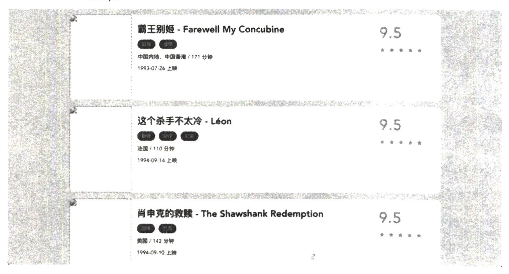
也许有人会说这个设置看起来没什么用啊?其实是有用的,图片资源都是二进制文件,我们在爬取过程中可能并不想关心具体的二进制文件内容,而只关心图片的URL是什么,所以浏览器中是否把图片加载出来就不重要了,如此设置可以提高整个页面的加载速度,提高爬取效率。另外,利用这个功能,还可以对一些响应内容进行修改,例如直接将响应结果修改为自定义的文本内容。
7.5 Selenium 爬取实战
这里首先定义一个HTML 文本文件,命名为custom_response.html,内容如下:
<!DOCTYPE html>
<html>
<head>
<title>Hack Response</title>
</head>
<body>
<h1>Hack Response</h1>
</body>
</html>代码编写如下:
from playwright.sync_api import sync_playwright
with sync_playwright() as p:
browser = p.chromium.launch(headless=False)
page = browser.new_page()
def modify_response(route, request):
route.fulfill(path="./custom_response.html")
page.route('/', modify_response)
page.goto("https://spa6.scrape.center/")
browser.close()这里我们使用 CallableRoute 对象的 fulfill 方法指定了一个本地文件,就是刚才我们定义的HTML 文件,运行结果如图7-36所示。
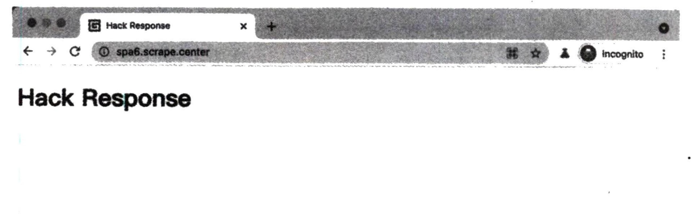
可以看到,响应结果已经被我们修改了,URL依然不变,但结果已经变成我们修改后的HTML代码。所以通过 route方法,我们可以灵活地控制请求和响应的内容,从而在某些场景下达成某些目的。
8. 总结
本节介绍了 Playwright 的基本用法,其API强大又易于使用,同时具备很多 Selenium、Pyppeteer不具备的更好用的API,是新一代爬取 JavaScript 渲染页面的利器。本节代码参见:https://github.com/Python3WebSpider/PlaywrightTest。
在7.1节,我们学习了Selenium的基本用法,本节结合一个实际案例体会一下 Selenium的适用场景以及使用方法。
1. 准备工作
请先确保已经做好了如下准备工作。
安装好 Chrome 浏览器并正确配置了 ChromeDriver。
安装好 Python(至少为3.6版本)并能成功运行 Python程序。
安装好 Selenium 相关的包并能成功用 Selenium 打开 Chrome 浏览器。这些步骤在7.1节都有提及,可以参考相关内容。准备工作都做好后,便可以开始实战练习了。
2. 爬取目标
本节还是用电影网站 https://spa2.scrape.center/做示例,首页如图7-37所示。
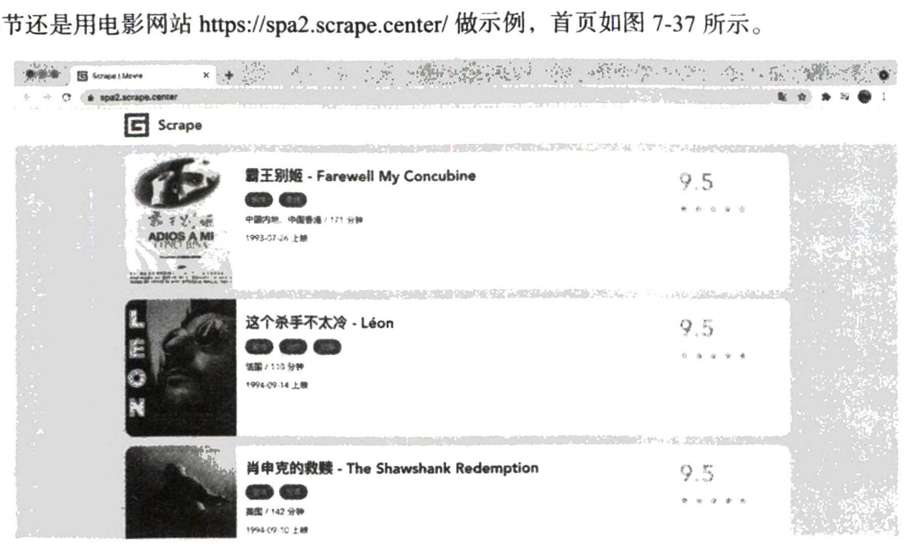
乍一看,页面和之前没什么区别。接下来我们仔细观察每部电影的URL 和 Ajax 请求 API,例如点击《霸王别姬》,观察URL的变化,如图7-38所示。
可以看到,电影详情页的URL 和首页的不一样。在图2-13中,URL里的 detail 后面直接跟的是 id, 是1、2、3等数字,但是这里变成了一个长字符串,看着是由Base64编码而得,也就是说详情页的URL 中包含加密参数,所以我们无法直接根据规律构造详情页的URL。然后,依次点击列表页的第1页到第10页,观察 Ajax请求,如图7-39所示。
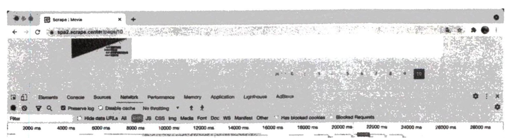
可以看到,这里接口的参数多了一个token字段,而且每次请求的token 都不同,这个字段看着 同样是由Base64编码而得。更棘手的一点是,API具有时效性,意味着把Ajax 接口内URL复制下来, 短期内是可以访问的,但过段时间就访问不了了,会直接返回401 状态码。之前我们可以直接用requests 构造Ajax请求,但现在 Ajax请求接口中带有token,而且还是可变 的。我们不知道token的生成逻辑,就没法直接构造Ajax请求来爬取数据。怎么办呢?先分析出 token 的生成逻辑,再模拟 Ajax请求,是一个办法,可这个办法相对较难。此时我们可以用 Selenium 绕过 这个阶段,直接获取 JavaScript 最终渲染完成的页面源代码,再从中提取数据即可。之后我们要完成如下工作。
通过 Selenium 遍历列表页,获取每部电影的详情页URL。
通过 Selenium 根据上一步获取的详情页URL爬取每部电影的详情页。
从详情页中提取每部电影的名称、类别、分数、简介、封面等内容。
3. 爬取列表页
先做一系列初始化工作:
from selenium import webdriver
from selenium.common.exceptions import TimeoutException
from selenium.webdriver.common.by import By
from selenium.webdriver.support import expected_conditions as EC
from selenium.webdriver.support.wait import WebDriverWaitimport logginglogging.basicConfig(level=logging.INFO,
format='%(asctime)s - %(levelname)s: % (message)s')
INDEX_URL = 'https://spa2.scrape.center/page/{page}'
TIME_OUT = 10
TOTAL_PAGE = 10
browser = webdriver.Chrome()
wait = WebDriverWait (browser, TIME_OUT)这里首先导入了一些必要的Selenium包,包括 webdriver、WebDriverWait等,后面我们会使用这些包爬取页面和设置延迟等待等。然后定义了日志配置和几个变量,这和之前几节的内容类似。接着使用Chrome 类生成了一个 webdriver 对象,并赋值为 browser 变量。我们可以通过 browser 调用Selenium 的一些API来对浏览器进行一系列操作,如截图、点击、下拉等。最后,我们声明了一个WebDriverWait 对象,利用它可以配置页面加载的最长等待时间。下面我们观察一下列表页,然后爬取其中的数据。能够观察到,列表页的URL 还是有一定规律的,例如第一页的URL 是 https://spa2.scrape.center/page/1,最后的数字就是页码,所以可以直接构造出每一页的URL。那么,怎么判断一个列表页是否加载成功呢?很简单,当页面上出现了我们想要的内容时,就代表加载成功了。这里可以使用 Selenium 的隐式判断条件,例如每部电影的信息区块的CSS 选择器#index.item,如图7-40所示。
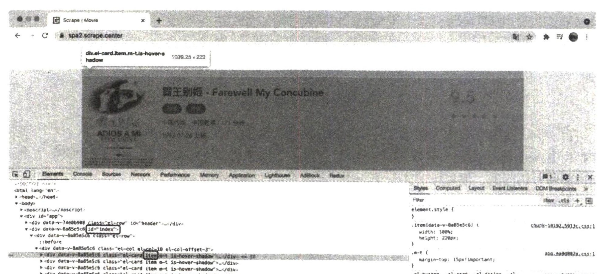
直接使用 visibility_of_all_elements_located 判断条件加上CSS选择器的内容,即可判断页面有没有加载成功,配合WebDriverWait 的超时配置,就可以实现10秒的页面加载监听。如果10秒之内,我们配置的条件得到满足,就代表页面加载成功,否则抛出 TimeoutException异常。实现代码如下:
def scrape_page(url, condition, locator):
logging.info('scraping %s', url)
try:
browser.get(url)
wait.until(condition (locator))
except TimeoutException:
logging.error('error occurred while scraping %s', url, exc_info=True)
def scrape_index(page):
url = INDEX_URL.format(page=page)scrape_page(url, condition=EC.visibility_of_all_elements_located,
locator=(By.CSS_SELECTOR, '#index.item'))这里我们定义了两个方法。第一个方法 scrape_page 依然是一个通用的爬取方法,可以对任意URL进行爬取、状态监听以及异常处理,接收 url、condition、locator 三个参数:url就是要爬取的页面的URL;condition 是页面加载成功的判断条件,可以是expected_conditions 中的某一项,如visibility_of_all_elements_located、visibility_of_element_located 等;locator 是定位器,是一个元组,通过配置查询条件和参数来获取一个或多个节点,如(By.CSS_SELECTOR, '#index.item')代表通过CSS 选择器查找 #index.item来获取列表页所有的电影信息节点。另外,我们在爬取过程中添加了超时检测,如果到规定时间(这里为10秒)还没有加载出对应的节点,就抛出TimeoutException 异常并输出错误日志。第二个方法 scrape_index 则是爬取列表页的方法,接收一个参数page,通过调用scrape_page方法并传入 condition 参数和 locator 参数,完成对列表页的爬取。这里的 condition 我们传入的是visibility_of_all_elements_located,代表所有节点都加载出来才算成功。注意,这里爬取页面时,不需要返回任何结果,因为执行完 scrape_index方法后,页面正好处于加载完成状态,利用browser 对象即可进行进一步的信息提取。现在已经可以加载出列表页了,下一步当然就是解析列表页,从中提取详情页的URL。这里定义一个解析列表页的方法,具体如下:
from urllib.parse import urljoin
def parse_index():
elements = browser.find_elements_by_css_selector('#index .item .name')
for element in elements:
href = element.get_attribute('href')
yield urljoin(INDEX_URL, href)我们通过 find_elements_by_css_selector 方法直接从列表页中提取了所有电影节点,接着遍历这些节点,通过 get_attribute 方法提取了详情页的 href属性值,再用 urljoin方法合并成一个完整的URL。最后,我们用一个main方法把上面所有的方法串联起来,实现如下:
def main():
try:
for page in range(1, TOTAL_PAGE + 1):
scrape_index(page)
detail_urls = parse_index()
logging.info('details urls %s', list(detail_urls))finally:
browser.close()这里我们遍历了所有页码,依次爬取了每一个列表页并提取出详情页的URL。运行结果如下:
2020-03-29 12:03:09,896 INFO: scraping https://spa2.scrape.center/page/1
2020-03-29 12:03:13,724 INFO: details urls ['https://spa2.scrape.center/detail/ZWYzNCNOZXVxMGJ0dWEjKC01N3cxcTVvNS0takA50Hh5Z21tbHlmeHMqLSFpLTAtbWIx','https://spa2.scrape.center/detail/ZWYzNCNOZXVxMGJ0dWEjKC01N3cxcTVvNS0takA5OHh5Z2ltbHlmeHMqLSFpLTAtbWI5','https://spa2.scrape.center/detail/ZWYzNCNOZXVxMGJodWEjKC01N3cxcTVvNS0takA5OHh5Z2ltbHlmeHMqLSFpLTAtbWIxMA==']
2020-03-29 12:03:13,724 INFO: scraping https://spa2.scrape.center/page/2由于输出内容较多,这里省略了部分内容。观察结果可以发现,我们已经成功提取到详情页那一个个不规则的 URL 了!
4. 爬取详情页
既然已经成功拿到详情页的URL了,接下来就进一步爬取详情页并提取对应的信息吧。基于同样的逻辑,这里也可以加一个判断条件,如果电影名称加载出来,就代表详情页加载成功。实现时,调用scrape_page 方法即可,代码如下:
def scrape_detail(url):scrape_page(url, condition=EC.visibility_of_element_located,
locator=(By.TAG_NAME, 'h2'))这里的判定条件 condition 传入的是 visibility_of_element_located,即单个元素出现即可。locator 传入的是(By.TAG_NAME, 'h2'),即h2这个节点,也就是电影名称对应的节点,如图7-41所示。
如果执行了 scrape_detail方法,没有抛出 TimeoutException 异常,就表示页面加载成功了。下面定义一个解析详情页的方法来提取我们想要的信息。实现如下:
def parse_detail():
url= browser.current_url
name = browser.find_element_by_tag_name('h2').text
categories = [element.text for element in browser.find_elements_by_css_selector('.categories button span')]
cover = browser.find_element_by_css_selector('.cover').get_attribute('src')
score = browser.find_element_by_class_name('score').text
drama = browser.find_element_by_css_selector('.drama p').text这里定义了一个 parse_detail 方法,提取了详情页的 URL 和电影的名称、类别、封面、分数和简介等内容,提取细节如下。
URL:直接调用 Browser 对象的 current_url 属性即可获取当前页面的 URL。
名称: 提取 h2 节点内部的文本即可获取电影名称。这里我们使用 find_element_by_tag_name 方法并传入 h2,提取到了指定名称对应的节点,然后调用 text 属性提取了节点内部的文本,即电影名称。
类别:为了方便,这里通过 CSS 选择器提取电影类别,对应的 CSS 选择器为 .categories buttonspan。可以使用 find_elements_by_css_selector 方法提取 CSS 选择器对应的多个类别节点,然后遍历这些节点,调用节点的 text 属性获取节点内部的文本。
封面:可以使用 CSS 选择器 .cover 直接获取封面对应的节点。但是由于封面的 URL 对应的是 src 这个属性,所以这里使用 get_attribute 方法并传入 src 来提取。
分数:对应的 CSS 选择器为 .score。依然可以用上面的方式来提取分数,但是这里换了一个方法,叫作 find_element_by_class_name,这个方法可以使用 class 的名称提取节点,能达到同样的效果,不过这里传入的参数就是 class 的名称 score 而不是 .score 了。提取节点后,再调用 text 属性提取节点文本即可。
简介:对应的 CSS 选择器为 .drama p,直接获取简介对应的节点,然后调用 text 属性提取文本即可。
最后,把所有结果构造成一个字典并返回。接下来,在 main 方法中添加对这两个方法的调用,实现如下:
def main():
try:
for page in range(1, TOTAL_PAGE + 1):
scrape_index(page)
detail_urls = parse_index()
for detail_url in list(detail_urls):
logging.info('get detail url %s', detail_url)
scrape_detail(detail_url)
detail_data = parse_detail()
logging.info('detail data %s', detail_data)
finally:
browser.close()这样爬取完列表页之后,就可以依次爬取详情页来提取每部电影的具体信息了。
2020-03-29 12:24:10,723 INFO: scraping https://spa2.scrape.center/page/1
2020-03-29 12:24:16,997 - INFO: get detail url https://spa2.scrape.center/detail/ZWYzNCNOZXVxMGJodWEj
KC01N3cxcTVvNS0takA50Hh5Z21tbHlmeHMqLSFpLTAtbWIx
2020-03-29 12:24:16,997 INFO: scraping https://spa2.scrape.center/detail/ZWYzNCNOZXVxMGJ0dWEjKC01
N3cxcTVvNS0takA50Hh5Z21tbHlmeHMqLSFpLTAtbWIx
2020-03-29 12:24:19,289 INFO: detail data {'url': 'https://spa2.scrape.center/detail/ZWYzNCNOZXVxMGJod
WEjKC01N3cxcTVvNS0takA5OHh5Z2ltbHlmeHMqLSFpLTAtbWIx', 'name': '霸王别姬- Farewell My Concubine',
'categories': ['剧情','爱情'], 'cover': 'https://po.meituan.net/movie/ce4da3e03e655b5b88ed31b5cd7896
cf62472.jpg@464w_644h_1e_1c', 'score': '9.5', 'drama':'影片借一出《霸王别姬》的京戏,牵扯出三个人之间
一段随时代风云变幻的爱恨情仇。段小楼(张丰毅饰)与程蝶衣(张国荣饰)是一对打小一起长大的师兄弟,两人
一个演生,一个饰旦,一向配合天衣无缝,尤其一出《霸王别姬》,更是誉满京城,为此,两人约定合演一辈子《霸
王别姬》。但两人对戏剧与人生关系的理解有本质不同,段小楼深知戏非人生,程蝶衣则是人戏不分。段小楼在认为5. 数据存储
最后,像之前那样添加一个存储数据的方法。为了方便,这里还是将数据保存为JSON文件,实现代码如下:
from os import makedirs
from os.path import exists
RESULTS_DIR = 'results'
exists(RESULTS_DIR) or makedirs (RESULTS_DIR)
def save_data(data):
name = data.get('name')
data_path = f'{RESULTS_DIR}/{name}.json'
json.dump(data, open(data_path, 'w', encoding='utf-8'), ensure_ascii=False, indent=2)这里的原理和实现方式与2.5节是完全相同的,不再赘述。最后在 main 方法中添加对 save_data方法的调用即可。
6. 设置无头模式
如果觉得爬取过程中弹出浏览器会造成干扰,可以开启 Chrome的无头模式,这样不仅解决了干扰问题,爬取速度也会得到进一步提升。只需要对代码做如下修改即可开启无头模式:
options = webdriver.ChromeOptions()
options.add_argument('--headless')
browser = webdriver.Chrome(options=options)这里通过 ChromeOptions 对象添加了--headless 参数,然后用ChromeOptions 对 Chrome 进行了初始化。之后重新运行代码,Chrome 浏览器就不会弹出来了,爬取结果也和之前完全一样。
7. 总结
本节,我们通过一个案例了解了Selenium的适用场景,并实现了页面爬取,相信能让大家进一步掌握 Selenium的使用方法。本节代码参见:https://github.com/Python3WebSpider/ScrapeSpa2。
7.6 Pyppeteer 爬取实战
在7.3节,我们了解了Pyppeteer 的基本用法,和Selenium 相比,它确实有很多方便之处。本节我们就使用 Pyppeteer 改写 7.5节的爬取实现,来体会 Pyppeteer 和 Selenium 之间的不同,同时加强对 Pyppeteer 的理解和掌握。
1. 爬取目标
本节要爬取的目标和7.5节的一样,还是电影网站 https://spa2.scrape.center/。
2. 本节工作
本节要完成的工作也和7.5节的一样。
遍历每一页列表页,获取每部电影详情页的URL。
爬取每部电影的详情页,提取电影的名称、评分、类别、封面、简介等信息。
将爬取的数据保存为JSON文件。
3. 准备工作
在开始之前,需要做好如下准备工作。
安装好 Python(最低版本为3.6),并能成功运行Python程序。
安装好 Pyppeteer 并能成功运行示例。其他的浏览器、驱动配置此处就不需要了,这也是比 Selenium 更方便的地方。
4. 爬取列表页
依然是先做一些准备工作:
import logging
logging.basicConfig(level=logging.INFO,
format='%(asctime)s - %(levelname)s: % (message)s')
INDEX_URL = 'https://spa2.scrape.center/page/{page}'
TIMEOUT= 10
TOTAL_PAGE = 10
WINDOW_WIDTH, WINDOW_HEIGHT = 1366, 768
HEADLESS = False这里的大多数配置和7.5节是一样的,也导入了一些必要的包,定义了日志配置和几个变量,不过这里还额外定义了浏览器窗口的宽和高,此处是1366×768,大家也可以随意指定适合自己屏幕的宽高。另外,这里定义了一个变量 HEADLESS,用来指定是否启用 Pyppeteer 的无头模式,如果其值为 False,那么在启动 Pyppeteer 的时候会弹出一个 Chromium 浏览器窗口。
接着,我们再定义一个初始化 Pyppeteer 的方法,其中包括启动 Pyppeteer、新建一个页面选项卡和设置窗口大小等操作。代码实现如下:
from pyppeteer import launch
browser, tab = None, None
async def init():
global browser, tab
browser = await launch (headless=HEADLESS,
args=['--disable-infobars',
f'--window-size={WINDOW_WIDTH}, {WINDOW_HEIGHT}'])
tab = await browser.newPage()
await tab.setViewport({'width': WINDOW_WIDTH, 'height': WINDOW_HEIGHT})这里先声明了 browser 变量和 tab 变量,前者代表 Pyppeteer 所用的浏览器对象,后者代表新建的页面选项卡。这两项都被设置为了全局变量,能够方便其他方法调用。然后定义了一个 init 方法,该方法中调用了 Pyppeteer 的 launch 方法,并且给 headless 参数传入 HEADLESS,将 Pyppeteer 设置为非无头模式,还通过 args 参数指定了隐藏提示条和设置了浏览器窗口的宽高。
JavaScript 动态渲染页面爬取
接下来,我们像之前一样,定义一个通用的爬取方法:
from pyppeteer.errors import TimeoutError
async def scrape_page(url, selector):
logging.info('scoping %s', url)
try:
await tab.goto(url)
await tab.waitForSelector(selector, options={
'timeout': TIMEOUT * 1000
})
except TimeoutError:
logging.error('error occurred while scraping %s', url, exc_info=True)这里定义了一个scrape_page方法,它接收两个参数:一个是url,代表要爬取的页面的URL,使用goto方法调用此 URL 即可访问对应页面;另一个是selector,即等待渲染出的节点对应的CSS选择器。此外,我们调用了 waitForSelector 方法,传入selector,并通过 options 指定了最长等待时间。
运行时,会首先访问传入的URL 对应的页面,然后等待某个和选择器匹配的节点加载出来,最长等待10秒。如果10秒内加载出来,就接着往下执行,否则抛出 TimeoutError异常,并输出错误日志。
下面实现爬取列表页的方法:
async def scrape_index(page):
url = INDEX_URL.format(page=page)
await scrape_page(url, '.item.name')这里定义了一个 scrape_index方法,它接收参数page,代表要爬取的页面的页码。方法中,我们首先通过INDEX_URL 构造出了列表页的URL,然后调用scrape_page 方法并将构造出的URL传入其中,同时传入选择器。
这里我们传入的选择器是.item.name,是列表页中电影的名称,意味着电影名称加载出来就代表页面加载成功了,如图7-42所示。
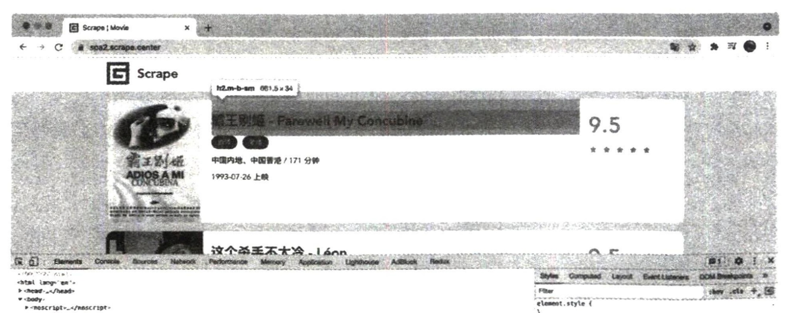
我们再定义一个解析列表页的方法,用来提取每部电影的详情页URL,方法定义如下:
async def parse_index():
return await tab.querySelectorAllEval('.item .name', 'nodes => nodes.map(node => node.href)')这里我们调用了 querySelectorAllEval 方法,它接收两个参数:一个是 selector,代表选择器;另一个是 pageFunction,代表要执行的 JavaScript 方法。这个方法的作用是找出和选择器匹配的节点,然后根据 pageFunction 定义的逻辑从这些节点中抽取出对应的结果并返回。我们给参数 selector 传入了电影名称。由于和选择器相匹配的节点有多个,所以给 pageFunction 参数输入的 JavaScript 方法就是 nodes,其返回值是调用 map 方法得到 node,然后调用 node 的 href 属性得到的超链接。这样,querySelectorAllEval 的返回结果就是当前列表页中所有电影的详情页 URL 组成的列表。接下来,我们串联调用刚实现的几个方法,代码如下:
import asyncio
async def main():
await init()
try:
for page in range(1, TOTAL_PAGE + 1):
await scrape_index(page)
detail_urls = await parse_index()
logging.info('detail_urls %s', detail_urls)
finally:
await browser.close()
if __name__ == '__main__':
asyncio.get_event_loop().run_until_complete(main())这里定义了 main 方法,其中首先调用 init 方法,然后遍历所有页码,调用 scrape_index 方法爬取了每一页列表页,接着调用 parse_index 方法,从列表页中提取了详情页的每个 URL,最后输出。运行结果如下:
2020-04-08 13:54:28,879 - INFO: scraping https://spa2.scrape.center/page/1
2020-04-08 13:54:31,411 - INFO: detail_urls ['https://spa2.scrape.center/detail/ZWYzNCNOZXVxMGJODWEjKC01
N3cxcTVvNS0takA50Hh5Z21tbHlmeHMqLSFpLTAtbWIx', ...,
'https://spa2.scrape.center/detail/ZWYzNCNOZXVxMGJ0dWEjKC01N3cxcTVvNS0takA5OHh5Z2ltbHlmeHMqLSFpLTAtbWI5',
'https://spa2.scrape.center/detail/ZWYzNCNOZXVxMGJ0dWEjKC01N3cxcTVvNS0takA50Hh5Z2ltbHlmeHMqLSFpLTAtbWIXMA==']
2020-04-08 13:54:31,411 - INFO: scraping https://spa2.scrape.center/page/2由于内容较多,这里省略了部分内容。可以看到,每一次的返回结果都是从当前列表页中提取出的所有详情页 URL 组成的列表。下一步就可以凭着这些 URL 爬取详情页了。
5. 爬取详情页
现在要爬取每一个详情页,先定义一个爬取详情页的方法,代码如下:
async def scrape_detail(url):
await scrape_page(url, 'h2')这个方法非常简单,直接调用 scrape_page 方法,传入详情页 URL 和选择器即可,这里的选择器我们直接传入了 h2,代表电影名称。运行顺利的话,Pyppeteer 已经成功加载出详情页了,如图 7-43 所示。
下一步就是提取详情页里的信息。定义一个提取详情信息的方法:
async def parse_detail():
url = tab.url
name = await tab.querySelectorEval('h2', 'node => node.innerText')
categories = await tab.querySelectorAllEval('.categories button span', 'nodes => nodes.map(node => node.innerText)')
cover = await tab.querySelectorEval('.cover', 'node => node.src')
score = await tab.querySelectorEval('.score', 'node => node.innerText')
drama = await tab.querySelectorEval('.drama p', 'node => node.innerText')
return {
'url': url,
'name': name,
'categories': categories,
'cover': cover,
'score': score,
'drama': drama
}这里我们定义了 parse_detail方法,提取了URL、名称、类别、封面、分数、简介等内容。
URL:直接调用tab对象的url属性即可获取当前页面的URL。
名称:由于名称只涉及一个节点,因此我们调用的是 querySelectorEval方法。给这个方法传入的第一个参数值是h2,代表根据电影名称提取对应的节点;对于第二个参数 pageFunction, 这里调用了 node 的 innerText 属性,提取了文本值,即电影名称。
类别:类别有多个,因此调用 querySelectorAllEval方法。其对应的CSS选择器是.categories button span,可以选中多个类别节点;第二个参数 pageFunction 和之前提取详情页 URL时类似,使用nodes 方法,然后调用map 方法提取 node 的 innerText 就得到了所有的电影类别。
封面:同样,可以使用CSS选择器.cover直接获取封面对应的节点,不同之处是封面的URL 对应 src属性,所以这里提取 src属性。
分数:使用CSS 选择器.score 直接获取分数对应的节点,然后调用 node 的 innerText 属性,提取文本值。
简介:使用CSS选择器.drama p直接获取简介对应的节点,然后调用 node 的 innerText 属性,提取文本值。
最后,将提取结果汇总成一个字典并返回。接下来,在main方法里添加对 scrape_detail方法和 parse_detail方法的调用。main方法改写如下:
async def main():
await init()
try:
for page in range(1, TOTAL_PAGE + 1):
await scrape_index(page)
detail_urls
await parse_index()
for detail_url in detail_urls:
await scrape_detail(detail_url)
detail_data = await parse_detail()
logging.info('data %s', detail_data)
finally:
await browser.close()重新运行,结果如下:
2020-04-08 14:12:39,564 - INFO: scraping https://spa2.scrape.center/page/1
2020-04-08 14:12:42,935 - INFO: scraping https://spa2.scrape.center/detail/ZWYzNCNOZXVxMGJodWEjKC01N3cxc
TVvNS0takA50Hh5Z2ltbHlmeHMqLSFpLTAtbWIx
2020-04-08 14:12:45,781 INFO: data {'url': 'https://spa2.scrape.center/detail/ZWYzNCNOZXVXMGJ0dWEjKC01
N3cxcTVvNS0takA50Hh5Z21tbHlmeHMqLSFpLTAtbWIx', 'name':'霸王别姬- Farewell My Concubine', 'categories':
['剧情','爱情'], 'cover': 'https://po.meituan.net/movie/ce4da3e03e655b5b88ed31b5cd7896cf62472.jpg@464w_
644h_1e_1c', 'score': '9.5', 'drama':'影片借一出《霸王别姬》的京戏,牵扯出三个人之间一段随时代风云变
幻的爱恨情仇。段小楼(张丰毅饰)与程蝶衣(张国荣饰)是一对打小一起长大的师兄弟,两人一个演生,一个饰
旦,一向配合天衣无缝,尤其一出《霸王别姬》,更是誉满京城,为此,两人约定合演一辈子《霸王别姬》。但两人
对戏剧与人生关系的理解有本质不同,段小楼深知戏非人生,程蝶衣则是人戏不分。段小楼在认为该成家立业之时
迎娶了名妓菊仙(巩俐饰),致使程蝶衣认定菊仙是可耻的第三者,使段小楼做了叛徒,自此,三人围绕一出《霸
王别姬》生出的爱恨情仇战开始随着时代风云的变迁不断升级,终酿成悲剧。'}
2020-04-08 14:12:45,782 INFO: scraping https://spa2.scrape.center/detail/ZWYzNCNOZXVxMGJodWEjKC01N3cxc
TVvNS0takA50Hh5Z2ltbHlmeHMqLSFpLTAtbWIy可以看到,这里首先爬取列表页,然后提取详情页URL,接着爬取详情页,提取出我们想要的电影信息,一个详情页爬完再接着爬取下一个。这样所有详情页就都被我们爬取下来了。
6. 数据存储
和7.5节一样,这里也定义一个数据存储方法。为了方便,还是将爬取下来的数据保存为JSON 文件,实现如下:
import json
from os import makedirs
from os.path import exists
RESULTS_DIR = 'results'
exists(RESULTS_DIR) or makedirs (RESULTS_DIR)
async def save_data(data):
name = data.get('name')
data_path = f'{RESULTS_DIR}/{name}.json'
json.dump(data, open(data_path, 'w', encoding='utf-8'), ensure_ascii=False, indent=2)这里的实现原理和之前完全相同,但由于Pyppeteer 是异步调用,所以需要在save_data 方法的前面加上 async 关键字。最后,在main 方法里添加对 save_data 方法的调用。
7. 问题排查
在代码运行过程中,可能会由于Pyppeteer本身实现方面出问题,因此在连续运行20秒之后控制台输出如下错误内容:
pyppeteer.errors. NetworkError: Protocol Error (Runtime.evaluate): Session closed. Most likely the page has
been closed.其原因是 Pyppeteer 内部使用了 WebSocket,如果 WebSocket 客户端发送 ping信号20秒之后仍未收到 pong 应答,就会中断连接。问题的解决方法和详情描述见https://github.com/miyakogi/pyppeteer/issues/178,此时我们可以通过修改 Pyppeteer 源代码来解决这个问题,对应的代码修改见 https://github.com/miyakogi/pyppeteer/pull/160/files,即给 connect 方法添加 ping_interval=None 和 ping_timeout=None 这两个参数。另外,也可以复写一下 connect 方法的实现,其解决方案同样可以在 https://github.com/miyakogi/pyppeteer/pull/160中找到,例如 patch_pyppeteer 的定义。
8. 无头模式
最后,如果代码能稳定运行了,可以将其改为无头模式,只要将HEADLESS 参数值修改为True即可:HEADLESS True这样在运行的时候就不会弹出浏览器窗口了。
9. 总结
本节我们通过实例讲解了使用 Pyppeteer 爬取一个完整网站的过程,相信大家会进一步掌握Pyppeteer 的使用。本节代码参见:https://github.com/Python3WebSpider/ScrapeSpa2。
7.7 CSS 位置偏移反爬案例分析与爬取实战
我们学习了 Selenium、Pyppeteer 等工具,体会了它们的强大,但千万别以为这些工具就是万能的,不容易爬取的数据依然存在,例如网页利用CSS 控制文字的偏移位置,或者通过一些特殊的方式隐藏关键信息,都有可能对数据爬取造成干扰。本节先了解 CSS 位置偏移反爬虫的一些解决方案。
1. 案例
先介绍一个案例网址 https://antispider3.scrape.center/,页面如图7-44所示。
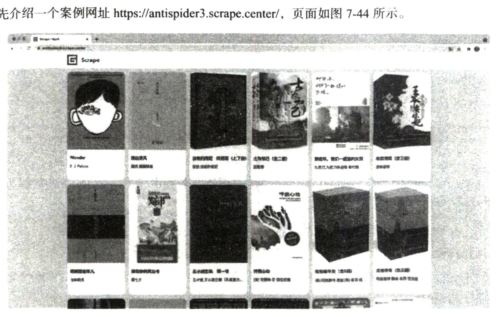
乍一看似乎也没什么特别之处,但如果真用 Selenium 等工具爬取和提取数据,坑就立马显现出来了,不妨试一试。先尝试用 Selenium 获取首页的页面源代码,并解析每个标题的内容:
from selenium import webdriver
from pyquery import PyQuery as pq
from selenium.webdriver.common.by import By
from selenium.webdriver.support import expected_conditions as EC
from selenium.webdriver.support.wait import WebDriverWait
browser = webdriver.Chrome()
browser.get('https://antispider3.scrape.center/')
WebDriverWait(browser, 10)
.until(EC.presence_of_all_elements_located((By.CSS_SELECTOR, '.item')))
html = browser.page_source
doc = pq(html)
names = doc('.item.name')
for name in names.items():
print(name.text())
browser.close()这里我们使用 Selenium 打开 Chrome 浏览器,然后使用WebDriverWait 对象的 until 方法指定了等待加载的内容,确保首页上每本书的信息都可以加载出来。之后输出页面源代码,使用pyquery 将标题中的纯文本解析出来,一切看起来似乎非常正常对不对?然而运行结果是这样的:Wonder风清白家结妃上册下宠(法终老篇)的为己(册全)士知二那些年,我们一起追的女孩全三()城倾我册非些那儿朝事明的我书忘和笑你一第王小波卷集全怦动然心龙枪编年史(全3册)枪三册传全(奇龙)黎街明之认示其理启学知心及银河帝国2:基地与帝国:帝基银国河地解材小文四下级学教语年全越界言论(第3卷)结果中很多标题的文字顺序是乱的,例如《明朝那些事儿》对应的输出结果是“些那儿朝事明”,这是怎么回事?
2. 排查
我们去浏览器里面研究一下源代码,如图7-45所示。
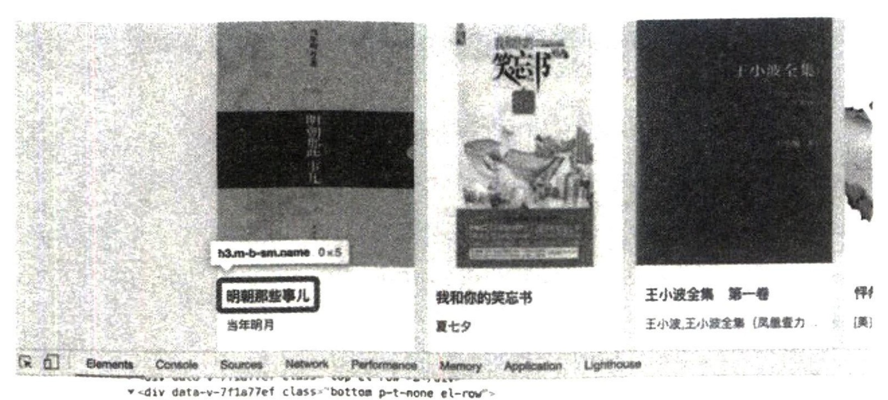
可以发现,一个字对应一个span 节点,这个节点本身的顺序就是乱的,所以用pyquery 提取出来的标题内容乱序就不足为怪了。源代码中的文字本身是乱的,那为什么在网页上看到的标题是正确的?这是因为网页本身利用CSS 控制了文字的偏移位置,什么意思呢?观察下源代码:
<h3 data-v-7f1a77ef="" class="m-b-sm name">
<span data-v-7f1a77ef="" class="char" style="left: 16px">朝 </span>
<span data-v-7f1a77ef="" class="char" style="left: 64px"> 事 </span>
<span data-v-7f1a77ef="" class="char" style="left: 48px"> 些</span>
<span data-v-7f1a77ef="" class="char" style="left: 0px"> 明</span>
<span data-v-7f1a77ef="" class="char" style="left: 32px"> 那 </span>
<span data-v-7f1a77ef="" class="char" style="left: 80px"> </span>
</h3>可以发现,每个span 节点都有一个style 属性,表示CSS样式,left的取值各不相同。另外,在浏览器中观察一下每个span 节点的完整样式,如图7-46所示。
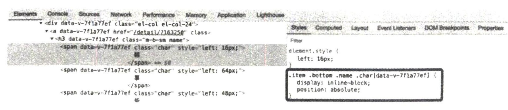
可以看到,span节点还有两个额外的样式,是display: inline-block 和 position: absolute,后者比较重要,代表绝对定位,设置这个样式后,就可以通过修改left的值控制 span 节点在页面中的偏移位置了,例如left:0px代表不偏移;left:16px代表从左边算起向右偏移16像素,于是节点就到了右边。源代码中,“明”字的偏移是0,“朝”字的偏移是16像素,“那”字的偏移是32像素,以此类推,最终标题的视觉效果就变成了“明朝那些事儿”。
3. 爬取
了解了基本原理后,我们就可以有的放矢了。这里只需要获取每个 span节点的style属性,提取出偏移值,然后排序就可以得到最终结果了。
先实现基本的提取方法:
from selenium import webdriver
from pyquery import PyQuery as pq
from selenium.webdriver.common.by import By
from selenium.webdriver.support import expected_conditions as EC
from selenium.webdriver.support.wait import WebDriverWait
import re
def parse_name(name_html):
chars = name_html('.char')
items = []
for char in chars.items():
items.append({
'text': char.text().strip(),
'left': int(re.search('(\d+)px', char.attr('style')).group(1))
})
items = sorted(items, key=lambda x: x['left'], reverse=False)
return ''.join([item.get('text') for item in items])
browser = webdriver.Chrome()
browser.get('https://antispider3.scrape.center/')
WebDriverWait(browser, 10) \
.until(EC.presence_of_all_elements_located((By.CSS_SELECTOR, '.item')))
html = browser.page_source
doc = pq(html)
names = doc('.item.name')
for name_html in names.items():
name = parse_name(name_html)
print(name)
browser.close()这里我们定义了一个 parse_name 方法,用来解析页面源代码得到最终的标题。它接收一个参数 name_html,就是标题的HTML文本,类似这样:
<h3 data-v-7f1a77ef="" class="m-b-sm name">
<span data-v-7f1a77ef="" class="char" style="left: 16px"> 朝 </span>
<span data-v-7f1a77ef="" class="char" style="left: 64px"> </span>
<span data-v-7f1a77ef="" class="char" style="left: 48px"> 些 </span>
<span data-v-7f1a77ef="" class="char" style="left: 0px"> 明 </span>
<span data-v-7f1a77ef="" class="char" style="left: 32px"> 那 </span>
<span data-v-7f1a77ef="" class="char" style="left: 80px"> 儿 </span>
</h3>在 parse_name 方法中,我们首先选取.char节点,将其赋值为chars变量,然后遍历 chars 变量,其中每个条目各自对应一个span节点,其内容类似于:
<span data-v-7f1a77ef="" class="char" style="left: 16px"> 朝 </span>在遍历的过程中,我们提取了span节点的文本内容作为字典的 text 属性,还提取了 style 属性的内容,例如这里提取的是16px,并用正则表达式提取了其中的数值,这里是16,将其赋值为字典的left 属性。遍历结束后,items 的结果类似下面这样:
[{'text': '朝', 'left': 16}, {'text': '', 'left': 64}, {'text': '些', 'left': 48},{'text':'明', 'left':0},{'text':'那', 'left': 32},{'text':'儿','left': 80}]面对这样的结果,怎么排序呢?直接调用sorted 方法就行,它有两个参数,一个是key,用来指定根据什么排序,这里我们直接使用lambda 表达式提取 span 节点的 left属性,所以最终结果是根据left 的值排序而得;另一个参数是 reverse,用来指定排序方式,此处将其设置为False,表示从小到大排序。排序完的 items 变成了这样:
[{'text': '明', 'left': 0}, {'text': '朝', 'left': 16}, {'text': '那', 'left': 32},{'text':'些', 'left':
48}, {'text': '', 'left': 64}, {'text': '', 'left': 80}]最后将其中的 text 值提取出来并拼接,就得到了最终结果。代码的运行结果如下:清白家风法老的宠妃终结篇(上下册)士为知己(全二册)那些年,我们一起追的女孩非我倾城(全三册)明朝那些事儿我和你的笑忘书王小波全集第一卷怦然心动龙枪传奇(全三册)黎明之街认知心理学及其启示银河帝国:基地小学教材全解-四年级语文下等等,似乎少了几个标题,内容中间为什么会出现空余?再继续排查,会发现有些标题节点内部没有分为一个个 span 节点,这些标题内部的文字本身就有序,如图7-47所示。
7.8 字体反爬案例分析与爬取实战
经过观察和推测,不难发现内部没有 span 节点的 h3 标题节点都带有一个额外的取值为 name whole 的 class 属性,其余标题节点的内部则都分为了一个个 span节点。搞清楚问题所在,接下来稍微加判断即可,改写解析方法:
def parse_name(name_html):
has_whole = name_html('.whole')
if has_whole:
return name_html.text()
else:
chars = name_html('.char')
items = []
for char in chars.items():
items.append({
'text': char.text().strip(),
'left': int(re.search('(\d+)px', char.attr('style')).group(1))
})
items = sorted(items, key=lambda x: x['left'], reverse=False)
return ''.join([item.get('text') for item in items])运行结果如下:Wonder清白家风法老的宠妃终结篇(上下册)士为知己(全二册)那些年,我们一起追的女孩非我倾城(全三册)明朝那些事儿我和你的笑忘书王小波全集第一卷怦然心动龙枪编年史(全3册)龙枪传奇(全三册)黎明之街认知心理学及其启示银河帝国2:基地与帝国银河帝国:基地小学教材全解-四年级语文下越界言论(第3卷)我们成功爬取了书籍网站上每本书的名称!
4. 总结
本节分析的是一个特殊案例,通过这个案例可以知道,有时候我们使用 Selenium 爬取的内容并不一定和亲眼所见的完全符合,所以还需要小心。本节代码参见:https://github.com/Python3WebSpider/ScrapeAntispider3。
本节再分析一个反爬案例,该案例将真实的数据隐藏到字体文件里,使我们即使获取了页面源代码,也没法直接提取数据的真实值。
1. 案例介绍
案例网站为 https://antispider4.scrape.center/,打开之后看着和之前的电影网站没什么不同。我们按照7.7节类似的分析逻辑来爬取一些信息,例如电影标题、类别、评分等,代码实现如下:
from selenium import webdriver
from pyquery import PyQuery as pq
from selenium.webdriver.common.by import By
from selenium.webdriver.support import expected_conditions as ECfrom selenium.webdriver.support.wait import WebDriverWaitbrowser = webdriver.Chrome()
browser.get('https://antispider4.scrape.center/')
WebDriverWait(browser, 10).until(EC.presence_of_all_elements_located((By.CSS_SELECTOR, '.item')))
html = browser.page_source
doc = pq(html)
items = doc('.item')
for item in items.items():
name = item('.name').text()
categories = [o.text() for o in item('.categories button').items()]
score = item('.score').text()
print(f'name: {name} categories: {categories} score: {score}')
browser.close()这里先用 Selenium打开案例网站,等待所有电影加载出来,然后获取页面源代码,并通过 pyquery提取和解析每一个电影的信息,得到名称、类别和评分,之后输出,运行结果如下:name: 霸王别姬 - Farewell My Concubine categories: ['剧情', '爱情'] score:name:这个杀手不太冷- Léon categories: ['剧情','动作','犯罪'] score:name:肖申克的救赎 - The Shawshank Redemption categories: ['剧情','犯罪'] score:name:泰坦尼克号 - Titanic categories: ['剧情','爱情','灾难'] score:name:罗马假日 - Roman Holiday categories: ['剧情','喜剧','爱情'] score:name:唐伯虎点秋香- Flirting Scholar categories: ['喜剧','爱情','古装'] score:name: 乱世佳人- Gone with the Wind categories: ['剧情', '爱情','历史','战争'] score:name: 喜剧之王 - The King of Comedy categories: ['剧情','喜剧','爱情'] score:name:楚门的世界- The Truman Show categories: ['剧情', '科幻'] score:name:狮子王 - The Lion King categories: ['动画','歌舞','冒险'] score:很奇怪,结果中的score字段不包含任何信息,这是怎么回事?经过仔细观察,发现评分对应的源代码并不包含数字信息,如图7-48所示。
span 节点里就什么信息都没有,提取不出来自然也不足为奇了,那页面上的评分结果是怎么显示出来的呢?其实也是CSS 在作怪。
2. 案例分析
我们可以观察一下源代码,各个span 节点的不同之处在于内部i节点的class取值不太一样。可以看到图 7-50 中一共有3个span节点,对应的class 取值分别是 icon-789、icon-981 和 icon-504,这和显示的9.5有什么关系呢?接下来观察各个i节点的CSS样式,如图7-49所示。
</div>
<div data-v-090744c8 class="el-col el-col-24 el-col-xs-5 el-col-sm-5 el-col-md-4">
<p data-v-090744c8 class="score m-t-md m-b-n-sm">
▼<span data-v-090744c8>
<i data-v-090744c8 class="icon icon-789">::before 50
<1>
</span>
▸ <span data-v-090744c8>...</span>
<span data-v-090744c8>
▼<i data-v-090744c8 class="icon icon-504">:: before
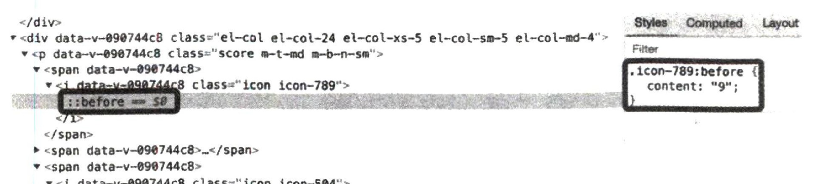
会发现i节点内部有一个::before 字段,在CSS中,该字段用于创建一个伪节点,即这个节点和i节点或者 span节点不一样。::before可以往特定的节点中插入内容,同时在CSS 中使用 content字段定义这个内容。我们在第一个i节点里看到了9这个数字,观察另外两个i节点,可以看到,和5,3个内容组合起来就是9.5。
3. 实战
那 class 取值和 content 字段值的映射关系是怎么定义的?我们可以在浏览器中追踪 CSS 源代 码,代码文件如图7-50所示。
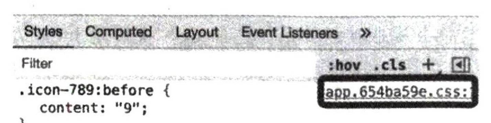
进入文件后,可以看到整个CSS 源代码都在一行放着,点击“{}”按钮格式化代码,如图7-51所示。
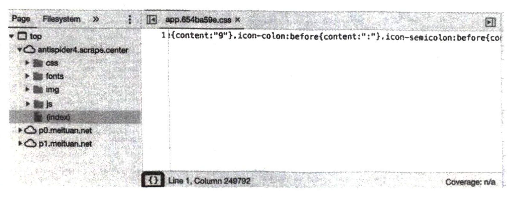
之后 CSS 源代码就被格式化了,如图7-52所示。
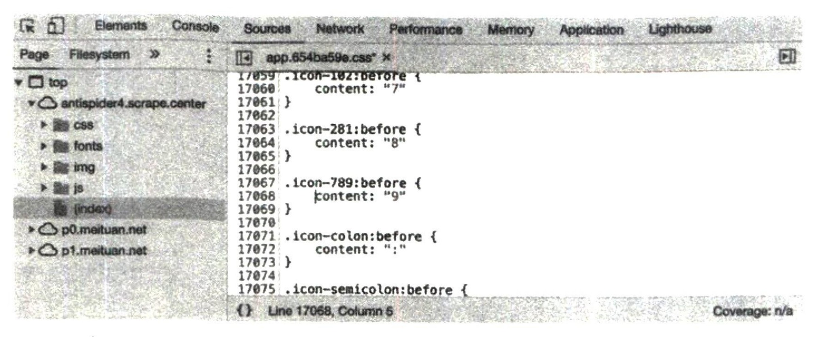
可以从中找出如下内容:
.icon-981:before {
content: "."
}
.icon-272:before {
content: "0"
}
.icon-281:before {
content: "8"
}
.icon-789:before {
content: "9"
}原来 class 对应的值就是一个个评分结果。这样我们就有底了,只需要解析对应的结果再做转换 即可。这里需要读取 CSS 文件并提取映射关系,这个CSS 文件是 https://antispider4.scrape.center/css/ app.654ba59e.css,其部分内容如图7-53所示。
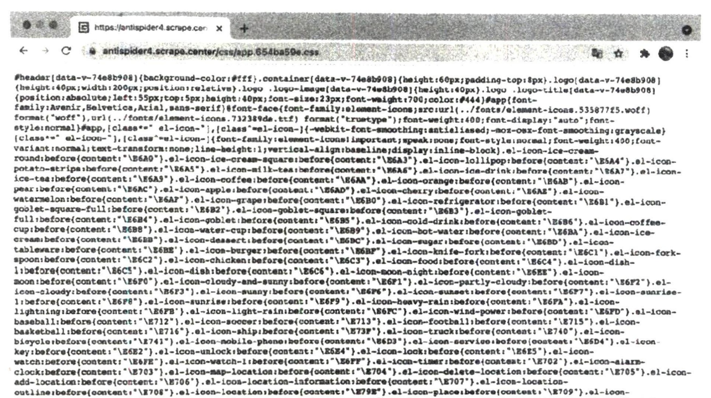
我们可以试着用 requests 库读取结果,并通过正则表达式将映射关系提取出来,代码实现如下:
import re
import requests
url = 'https://antispider4.scrape.center/css/app.654ba59e.css'
response = requests.get(url)
pattern = re.compile('.icon-(.*?):before\{content:"(.*?)"\}')
results = re.findall (pattern, response.text)
icon_map = {item[0]: item [1] for item in results}这里我们首先使用requests 库提取了CSS文件的内容,然后使用正则表达式进行了文本匹配,表达式写作.icon-(.*?):before\{content:"(.*?)"\},这个表达式并没有考虑空格,因为CSS源代码本身就在一行放着而且去除了所有空格。例如,对于如下CSS样式:
.icon-789:before{content:"9"}就会提取得到两个group,第一个是789,第二个是9。这里我们使用re里的findall方法进行了内容匹配,得到的结果如下:
[..., ('at', '@'), ('A', 'A'), ('B', 'B'), ('C', 'C'), ('D', 'D'), ('E', 'E'), ('F', 'F'), ('G', 'G'), ('H',
'H'(, )'',''(, )'נ', 'נ'(, )'',''(, )'L', 'L'), ('M', 'M'), ('N', 'N'), ('0', '0'), ('P', 'P'), ('Q',
'Q'), ('R', 'R'), ('S', 'S'), ('T', 'T'), ('U', 'U'), ('v', 'v'), ('w', 'w'), ('x', 'x'), ('Y', 'Y'), ('Z',
'Z'), ('bracketleft', '['), ('backslash', '\\\\'), ('bracketright', ']'), ('asciicircum', '^'), ('underscore',
'_'), ('grave', '^'), ('a', 'a'), ('b', 'b'), ('c', 'c'), ('d', 'd'), ('e', 'e'), ('f', 'f'), ('g', 'g'), ('h',
'h'), ('i', 'i'), ('j', 'j'), ('k', 'k'), ('1', '1'), ('m', 'm'), ('n', 'n'), ('o', 'o'), ('p', 'p'), ('q',
'q'), ('r', 'r'), ('s', 's'), ('t', 't'), ('u', 'u'), ('v', 'v'), ('w', 'w'), ('x', 'x'), ('y', 'y'), ('z',
'z'), ('braceleft', '{'), ('bar', '\'), ...]这个结果是由很多二元组组成的列表。我们遍历这个列表,将其赋值成字典即可,最后 icon_map就变成了如下这样:
{
}
'at': '@',
'A': 'A'
'B': 'B',
'789': '9',
'bar': '',例如使用 789 索引,得到的结果就是9。运行测试一下:
print(icon_map['789'])
print(icon_map['437'])运行结果:
9
3和源代码保持一致。所以,我们只需要修改一下提取逻辑即可,代码实现如下:
from selenium import webdriver
from pyquery import PyQuery as pq
from selenium.webdriver.common.by import By
from selenium.webdriver.support import expected_conditions as EC
from selenium.webdriver.support.wait import WebDriverWait
import re
import requests
url = 'https://antispider4.scrape.center/css/app.654ba59e.css'
response = requests.get(url)
pattern = re.compile('.icon-(.*?):before\{content:"(.*?)"\}')
results = re.findall (pattern, response.text)
icon_map = {item[0]: item[1] for item in results}
def parse_score(item):
elements = item('.icon')
icon_values = []
for element in elements.items():
class_name = (element.attr('class'))
icon_key = re.search('icon-(\d+)', class_name).group(1)
icon_value = icon_map.get(icon_key)
icon_values.append(icon_value)
return ''.join(icon_values)
browser = webdriver.Chrome()
browser.get('https://antispider4.scrape.center/')
WebDriverWait(browser, 10)\
.until(EC.presence_of_all_elements_located((By.CSS_SELECTOR, '.item')))
html = browser.page_source
doc = pq(html)
items = doc('.item')
for item in items.items():
name = item('.name').text()
categories = [o.text() for o in item('.categories button').items()]
score = parse_score(item)
print(f'name: {name} categories: {categories) score: {score}')
browser.close()这里我们定义了 parse_score方法,它接收一个PyQuery对象 item,对应一个电影条目。首先提取该 item 中所有带有 icon这个class的节点,然后遍历这些节点,从class属性里提取对应的icon 代号,例如 icon-789,提取的结果就是789,和我们刚构造的icon_map 是相对应的,将其赋值为 icon_key。使用 icon_key 从 icon_map 中查找对应的真实值,赋值为 icon_value。最后将 icon_value 拼合成一个字符串返回。
运行结果如下:name: 霸王别姬- Farewell My Concubine categories: ['剧情','爱情'] score: 9.5 name:这个杀手不太冷- Léon categories: ['剧情','动作','犯罪'] score: 9.5 name:肖申克的救赎 - The Shawshank Redemption categories: ['剧情','犯罪'] score: 9.5 name:泰坦尼克号 - Titanic categories: ['剧情','爱情','灾难'] score: 9.5 name:罗马假日 - Roman Holiday categories: ['剧情', '喜剧','爱情'] score: 9.5 name:唐伯虎点秋香 - Flirting Scholar categories: ['喜剧','爱情','古装'] score: 9.5 name: 乱世佳人 - Gone with the Wind categories: ['剧情','爱情','历史','战争']Score: 9.5 name:喜剧之王 - The King of Comedy categories: ['剧情','喜剧', '爱情'] score: 9.5 name:楚门的世界- The Truman Show categories: ['剧情','科幻'] score: 9.0 name: 狮子王 - The Lion King categories: ['动画','歌舞','冒险'] score: 9.0
4. 总结
本节介绍的也是一个特殊案例,通过这个案例我们知道,即使获取了关键的源代码,有些内容也还是提取不到,还是需要通过观察一些规律才能提取,平时遇到这种情况也应该多加小心。
本节代码参见:https://github.com/Python3WebSpider/ScrapeAntispider4。